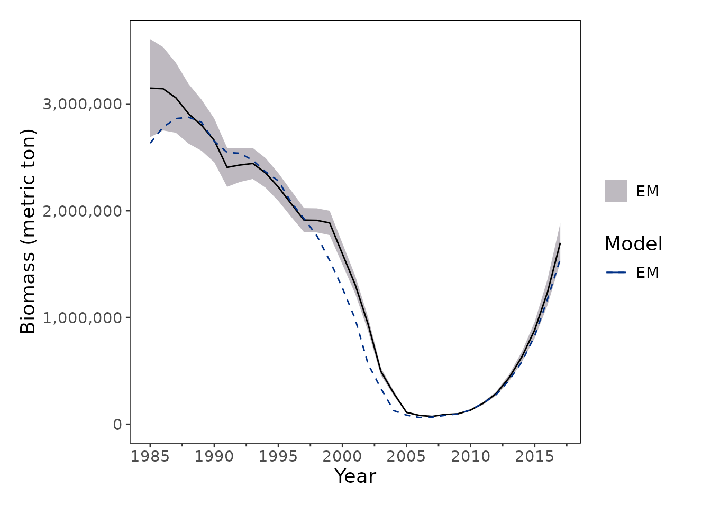
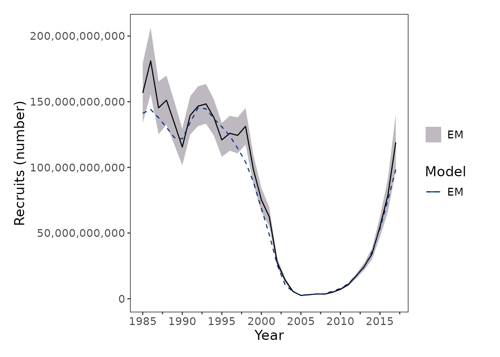
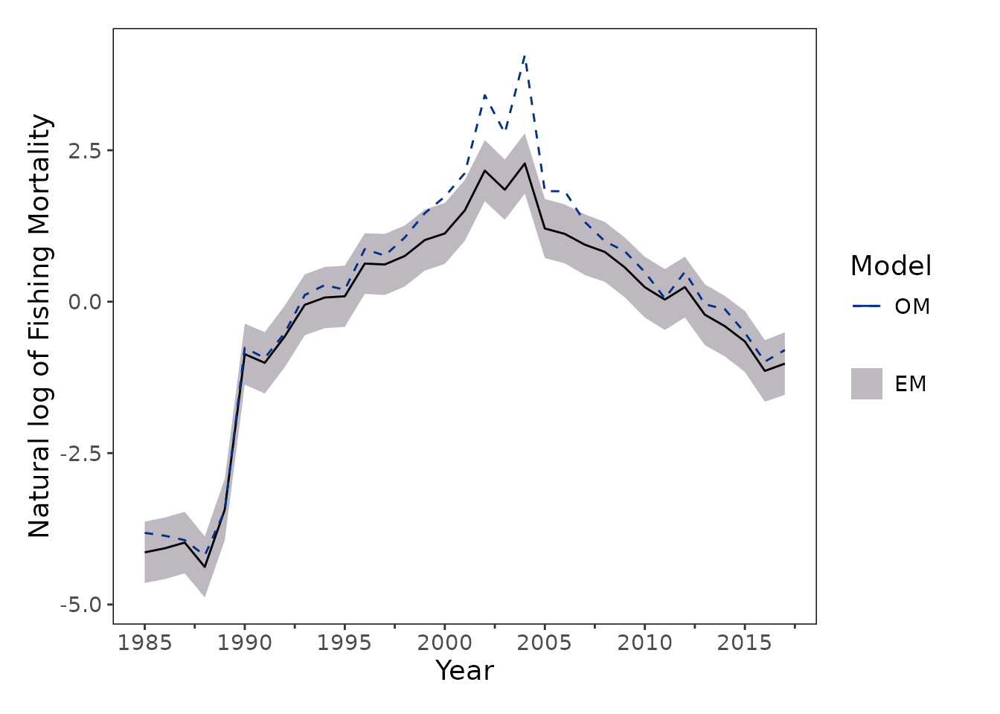
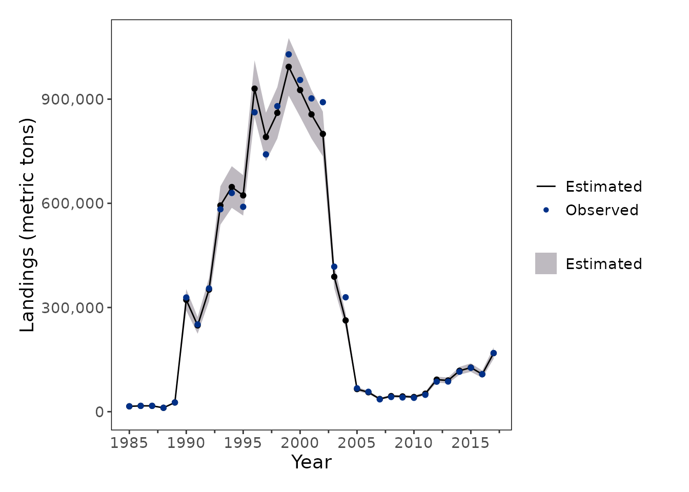
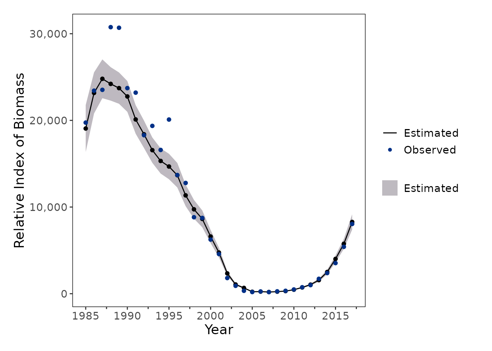
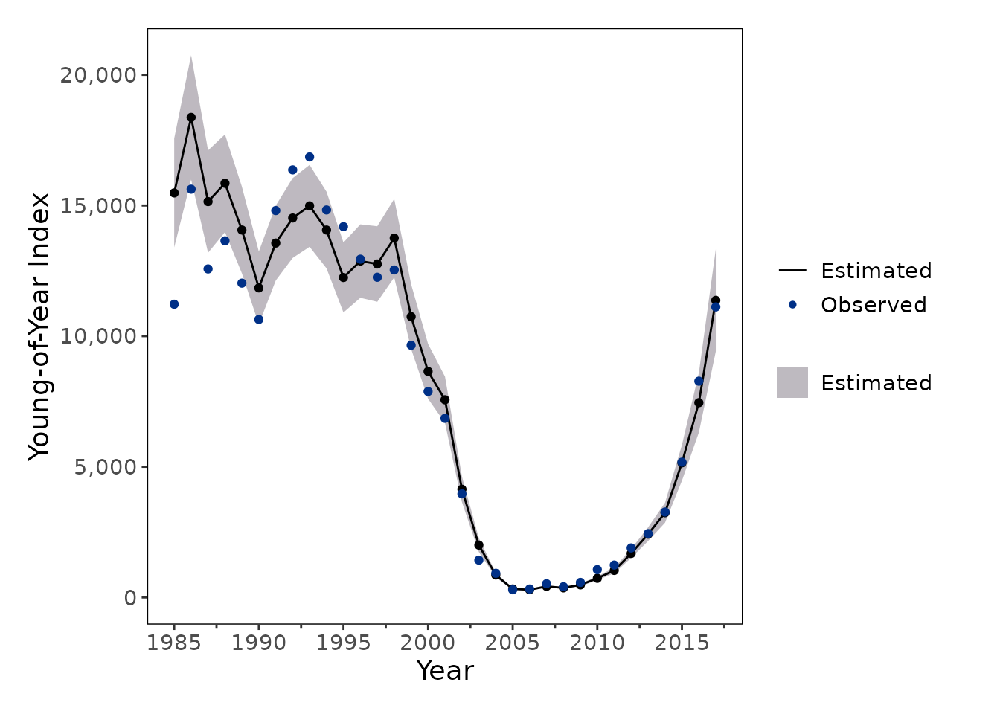
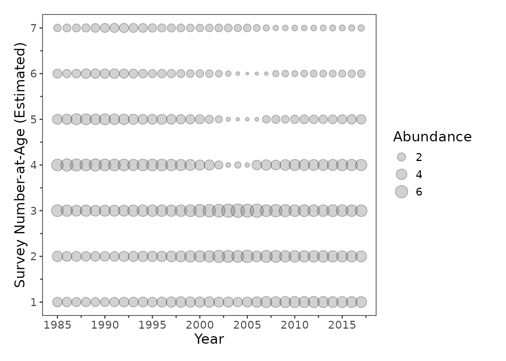
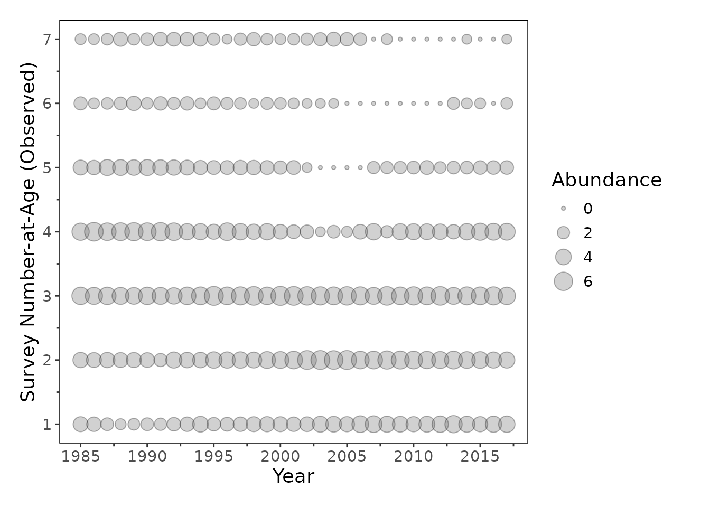
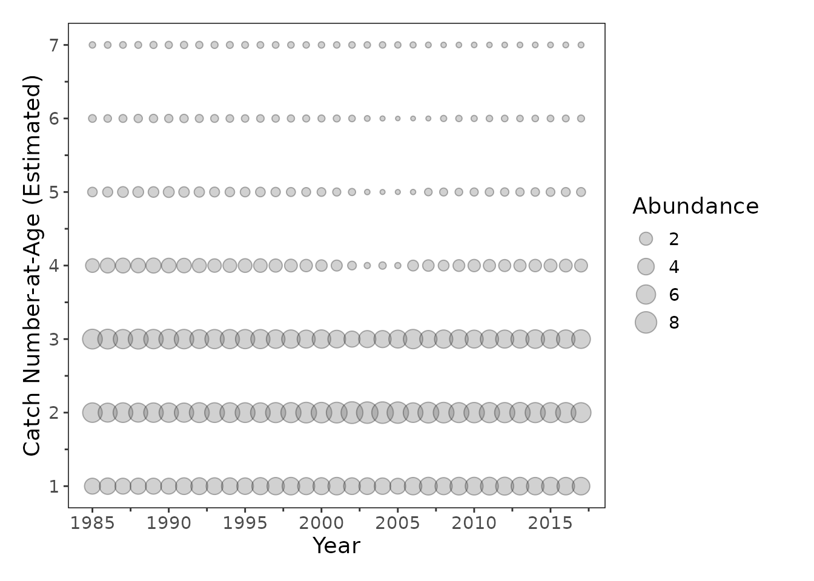
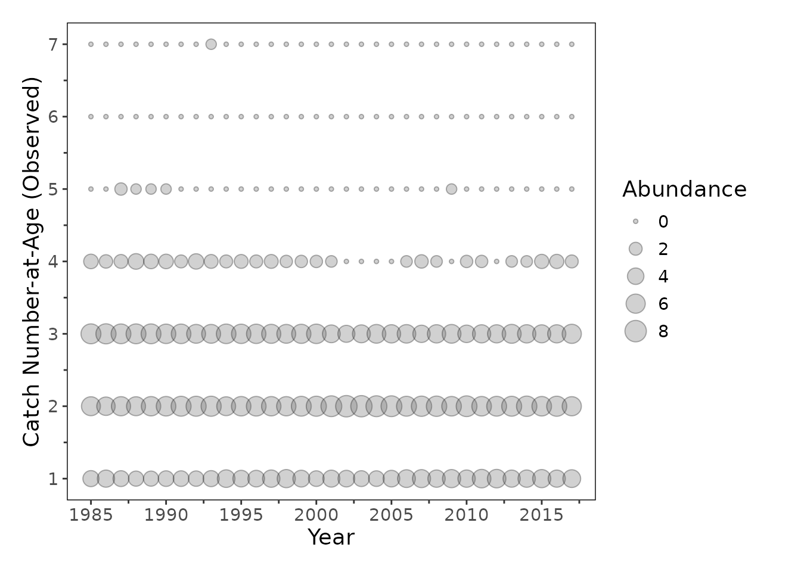

From Ecopath with Ecosim to Fisheries Integrated Modeling System
An Ecosystem-to-Stock-Assessment Simulation Workflow using {ecosystemom}
ewe-ecosim-base-simulation.RmdIntroduction
Ecosystem-based fishery management (EBFM) is crucial for addressing the complex, dynamic challenges posed by non-stationary climate, ecological, and economic conditions. However, translating outputs from ecosystem models into products suitable for fishery stock assessment models remains a key challenge.
This vignette demonstrates an end-to-end simulation workflow implemented in the {ecosystemom} package for linking ecosystem model outputs with fisheries estimation models. The workflow includes functions to:
-
load_model()— import and standardize output from ecosystem operating models (OM). For example, this function can be used to read and standardize Ecopath with Ecosim (EwE) Ecosim outputs for downstream analyses within {ecosystemom}. -
get_truth()— extract “true” population quantities from the OM, including annual or monthly biomass trajectories and biomass-at-age. -
sample_*()— generate sampled observations from OM outputs for use in estimation models such as the Fisheries Integrated Modeling System (FIMS). -
create_dsem_inputs()— prepare environmental covariates or diet composition data from the OM to support candidate model specifications for dynamic structural equation models (DSEMs) and related ecosystem-informed analyses.
Load EwE Model Outputs
We begin by identifying and parsing raw comma-separated output matrices exported from a baseline EwE model run of the Northwest Atlantic. The critical target files extracted by {ecosystemom} include:
- basic_estimates.csv
- biomass_monthly.csv
- catch_monthly.csv
- diet_composition.csv
- mortality_monthly.csv
- weight_monthly.csv
Get functional groups from the EwE model
# Locate package internal files
ewe_nwatlantic_path <- system.file(
"extdata", "ewe_ecosim_base_nwatlantic",
package = "ecosystemom"
)
model_years <- 1985:2017
# Load functional groups
functional_groups <- get_functional_groups(
file_path = fs::path(ewe_nwatlantic_path, "basic_estimates.csv")
)
functional_groups |>
scroll_table()| functional_group | species | group | functional_group_snake_case |
|---|---|---|---|
| striped bass 0 | striped bass | 0 | striped_bass_0 |
| striped bass 2-5 | striped bass | 2-5 | striped_bass_2_5 |
| striped bass 6+ | striped bass | 6+ | striped_bass_6_plus |
| menhaden 0 | menhaden | 0 | menhaden_0 |
| menhaden 1 | menhaden | 1 | menhaden_1 |
| menhaden 2 | menhaden | 2 | menhaden_2 |
| menhaden 3 | menhaden | 3 | menhaden_3 |
| menhaden 4 | menhaden | 4 | menhaden_4 |
| menhaden 5 | menhaden | 5 | menhaden_5 |
| menhaden 6+ | menhaden | 6+ | menhaden_6_plus |
| spiny dogfish | spiny dogfish | NA | spiny_dogfish |
| bluefish juv | bluefish | juv | bluefish_juv |
| bluefish adult | bluefish | adult | bluefish_adult |
| weakfish juv | weakfish | juv | weakfish_juv |
| weakfish adult | weakfish | adult | weakfish_adult |
| Atlantic herring 0-1 | Atlantic herring | 0-1 | atlantic_herring_0_1 |
| Atlantic herring 2+ | Atlantic herring | 2+ | atlantic_herring_2_plus |
| anchovies | anchovies | NA | anchovies |
| benthos | benthos | NA | benthos |
| zooplankton | zooplankton | NA | zooplankton |
| phytoplankton | phytoplankton | NA | phytoplankton |
| Detritus | Detritus | NA | detritus |
Load EwE Ecosim model
# Load and standardize EwE outputs
data_om <- load_model(
directory = ewe_nwatlantic_path,
functional_groups = functional_groups,
type = "ewe_ecosim",
unit = c(
"biomass" = "1e^6 mt",
"catch" = "1e^6 mt",
"landings" = "1e^6 mt",
"total_mortality" = "year^-1",
"weight" = "NA"
)
)
#> Warning: Detected negative natural mortality in year(s): 1985, 1986, 1987, 1988, 1996,
#> 1998, 1999, 2000, 2001, 2002, 2003, 2004, 2005, 2006, 2007, 2008, 2009.
#> ℹ We used 0 for those negative natural mortality values for now.
#> ℹ Please check the Ecosim fishing mortality input. Are the input values
#> reasonable? Is catch greater than biomass?
data_om |>
head(n = 10) |>
dplyr::mutate(file_name = "./biomass_monthly.csv") |>
scroll_table()| file_name | type | year | month | functional_group | value | species | group | functional_group_snake_case | unit |
|---|---|---|---|---|---|---|---|---|---|
| ./biomass_monthly.csv | biomass | 1985 | 1 | striped bass 0 | 0.0084961 | striped bass | 0 | striped_bass_0 | 1e^6 mt |
| ./biomass_monthly.csv | biomass | 1985 | 1 | striped bass 2-5 | 0.0362939 | striped bass | 2-5 | striped_bass_2_5 | 1e^6 mt |
| ./biomass_monthly.csv | biomass | 1985 | 1 | striped bass 6+ | 0.0186583 | striped bass | 6+ | striped_bass_6_plus | 1e^6 mt |
| ./biomass_monthly.csv | biomass | 1985 | 1 | menhaden 0 | 0.2910449 | menhaden | 0 | menhaden_0 | 1e^6 mt |
| ./biomass_monthly.csv | biomass | 1985 | 1 | menhaden 1 | 0.9729747 | menhaden | 1 | menhaden_1 | 1e^6 mt |
| ./biomass_monthly.csv | biomass | 1985 | 1 | menhaden 2 | 0.7663768 | menhaden | 2 | menhaden_2 | 1e^6 mt |
| ./biomass_monthly.csv | biomass | 1985 | 1 | menhaden 3 | 0.3195014 | menhaden | 3 | menhaden_3 | 1e^6 mt |
| ./biomass_monthly.csv | biomass | 1985 | 1 | menhaden 4 | 0.1119810 | menhaden | 4 | menhaden_4 | 1e^6 mt |
| ./biomass_monthly.csv | biomass | 1985 | 1 | menhaden 5 | 0.0409002 | menhaden | 5 | menhaden_5 | 1e^6 mt |
| ./biomass_monthly.csv | biomass | 1985 | 1 | menhaden 6+ | 0.0314173 | menhaden | 6+ | menhaden_6_plus | 1e^6 mt |
data_om |>
dplyr::distinct(type, species) |>
scroll_table()| type | species |
|---|---|
| biomass | striped bass |
| biomass | menhaden |
| biomass | spiny dogfish |
| biomass | bluefish |
| biomass | weakfish |
| biomass | Atlantic herring |
| biomass | anchovies |
| biomass | benthos |
| biomass | zooplankton |
| biomass | phytoplankton |
| biomass | Detritus |
| catch | striped bass |
| catch | menhaden |
| catch | spiny dogfish |
| catch | bluefish |
| catch | weakfish |
| catch | Atlantic herring |
| catch | anchovies |
| catch | benthos |
| catch | zooplankton |
| catch | phytoplankton |
| catch | Detritus |
| total_mortality | striped bass |
| total_mortality | menhaden |
| total_mortality | spiny dogfish |
| total_mortality | bluefish |
| total_mortality | weakfish |
| total_mortality | Atlantic herring |
| total_mortality | anchovies |
| total_mortality | benthos |
| total_mortality | zooplankton |
| total_mortality | phytoplankton |
| total_mortality | Detritus |
| weight | striped bass |
| weight | menhaden |
| weight | spiny dogfish |
| weight | bluefish |
| weight | weakfish |
| weight | Atlantic herring |
| weight | anchovies |
| weight | benthos |
| weight | zooplankton |
| weight | phytoplankton |
| weight | Detritus |
| fishing_mortality | striped bass |
| fishing_mortality | menhaden |
| fishing_mortality | spiny dogfish |
| fishing_mortality | bluefish |
| fishing_mortality | weakfish |
| fishing_mortality | Atlantic herring |
| fishing_mortality | anchovies |
| fishing_mortality | benthos |
| fishing_mortality | zooplankton |
| fishing_mortality | phytoplankton |
| fishing_mortality | Detritus |
| natural_mortality | striped bass |
| natural_mortality | menhaden |
| natural_mortality | spiny dogfish |
| natural_mortality | bluefish |
| natural_mortality | weakfish |
| natural_mortality | Atlantic herring |
| natural_mortality | anchovies |
| natural_mortality | benthos |
| natural_mortality | zooplankton |
| natural_mortality | phytoplankton |
| natural_mortality | Detritus |
Extract “Truth” from the OM
Using get_truth(), we synthesize raw EwE time series
into a structured tibble. This “truth” represents the true state of the
ecosystem against which our estimation model will be tested. For this
demonstration, our focal species is “menhaden”. To isolate a target
stock assessment from the broader ecosystem web, we subset a single
focal species from the OM. In this vignette, we track Atlantic Menhaden
(Brevoortia tyrannus), a key forage fish species. We extract “true”
indices and age compositions using get_truth().
# Extract "true" values for menhaden
truth_om <- get_truth(
data = data_om,
species_name = "menhaden"
)
truth_om |>
dplyr::select(-truth_om) |>
scroll_table()| species_name | truth_label | truth_type | truth_time_step |
|---|---|---|---|
| menhaden | biomass | index | monthly |
| menhaden | biomass | index | yearly |
| menhaden | biomass | agecomp | monthly |
| menhaden | biomass | agecomp | yearly |
| menhaden | catch | index | monthly |
| menhaden | catch | index | yearly |
| menhaden | catch | agecomp | monthly |
| menhaden | catch | agecomp | yearly |
| menhaden | fishing_mortality | index | monthly |
| menhaden | fishing_mortality | index | yearly |
| menhaden | fishing_mortality | agecomp | monthly |
| menhaden | fishing_mortality | agecomp | yearly |
| menhaden | natural_mortality | agecomp | monthly |
| menhaden | natural_mortality | agecomp | yearly |
| menhaden | numbers | index | monthly |
| menhaden | numbers | index | yearly |
| menhaden | numbers | agecomp | monthly |
| menhaden | numbers | agecomp | yearly |
| menhaden | total_mortality | agecomp | monthly |
| menhaden | total_mortality | agecomp | yearly |
| menhaden | weight | agecomp | monthly |
| menhaden | weight | agecomp | yearly |
# Extract and unnest annual catch
biomass_scalar <- 1000000
catch_index_om <- truth_om |>
dplyr::filter(
truth_label == "catch",
truth_type == "index",
truth_time_step == "yearly"
) |>
tidyr::unnest(cols = c(truth_om)) |>
dplyr::mutate(
truth_value = truth_value * biomass_scalar,
truth_unit = "mt"
)
catch_index_om |>
scroll_table()| species_name | truth_label | truth_type | truth_time_step | truth_year | truth_unit | truth_value |
|---|---|---|---|---|---|---|
| menhaden | catch | index | yearly | 1985 | mt | 16436.46 |
| menhaden | catch | index | yearly | 1986 | mt | 16565.34 |
| menhaden | catch | index | yearly | 1987 | mt | 15939.05 |
| menhaden | catch | index | yearly | 1988 | mt | 12596.12 |
| menhaden | catch | index | yearly | 1989 | mt | 25993.96 |
| menhaden | catch | index | yearly | 1990 | mt | 321014.86 |
| menhaden | catch | index | yearly | 1991 | mt | 258893.40 |
| menhaden | catch | index | yearly | 1992 | mt | 365211.37 |
| menhaden | catch | index | yearly | 1993 | mt | 600358.51 |
| menhaden | catch | index | yearly | 1994 | mt | 659307.57 |
| menhaden | catch | index | yearly | 1995 | mt | 604887.34 |
| menhaden | catch | index | yearly | 1996 | mt | 907276.10 |
| menhaden | catch | index | yearly | 1997 | mt | 771183.60 |
| menhaden | catch | index | yearly | 1998 | mt | 878034.15 |
| menhaden | catch | index | yearly | 1999 | mt | 981962.22 |
| menhaden | catch | index | yearly | 2000 | mt | 961678.94 |
| menhaden | catch | index | yearly | 2001 | mt | 926563.53 |
| menhaden | catch | index | yearly | 2002 | mt | 933937.94 |
| menhaden | catch | index | yearly | 2003 | mt | 435965.57 |
| menhaden | catch | index | yearly | 2004 | mt | 292324.12 |
| menhaden | catch | index | yearly | 2005 | mt | 66979.80 |
| menhaden | catch | index | yearly | 2006 | mt | 58767.23 |
| menhaden | catch | index | yearly | 2007 | mt | 36368.17 |
| menhaden | catch | index | yearly | 2008 | mt | 41439.10 |
| menhaden | catch | index | yearly | 2009 | mt | 42480.31 |
| menhaden | catch | index | yearly | 2010 | mt | 42963.63 |
| menhaden | catch | index | yearly | 2011 | mt | 47277.22 |
| menhaden | catch | index | yearly | 2012 | mt | 91043.37 |
| menhaden | catch | index | yearly | 2013 | mt | 87008.47 |
| menhaden | catch | index | yearly | 2014 | mt | 120764.99 |
| menhaden | catch | index | yearly | 2015 | mt | 119770.21 |
| menhaden | catch | index | yearly | 2016 | mt | 110616.90 |
| menhaden | catch | index | yearly | 2017 | mt | 175165.13 |
# Extract and unnest annual weight-at-age
weight_scalar <- 738 / 1000000
weight_agecomp_om <- truth_om |>
dplyr::filter(
truth_label == "weight",
truth_type == "agecomp",
truth_time_step == "yearly"
) |>
tidyr::unnest(cols = c(truth_om)) |>
dplyr::mutate(
truth_value = truth_value * weight_scalar,
truth_unit = "mt"
)
# Extract and unnest annual catch-at-age in numbers
catch_agecomp_om <- truth_om |>
dplyr::filter(
truth_label == "catch",
truth_type == "agecomp",
truth_time_step == "yearly"
) |>
tidyr::unnest(cols = c(truth_om)) |>
dplyr::mutate(
truth_value = truth_value * biomass_scalar,
truth_unit = "mt"
) |>
dplyr::left_join(
weight_agecomp_om |>
dplyr::select(-species_name, -truth_label, -truth_type, -truth_time_step, -truth_unit),
by = c("truth_year", "truth_group"),
suffix = c("_catch", "_weight")
) |>
dplyr::mutate(
truth_value = ceiling(truth_value_catch / truth_value_weight),
truth_unit = "numbers"
) |>
dplyr::select(-truth_value_catch, -truth_value_weight)
# Extract and unnest annual biomass
biomass_index_om <- truth_om |>
dplyr::filter(
truth_label == "biomass",
truth_type == "index",
truth_time_step == "yearly"
) |>
tidyr::unnest(cols = c(truth_om)) |>
dplyr::mutate(
truth_value = truth_value * biomass_scalar,
truth_unit = "mt"
)
# Extract and unnest annual number-at-age
number_agecomp_om <- truth_om |>
dplyr::filter(
truth_label == "numbers",
truth_type == "agecomp",
truth_time_step == "yearly"
) |>
tidyr::unnest(cols = c(truth_om)) |>
dplyr::mutate(
truth_value = ceiling(truth_value * biomass_scalar / weight_scalar),
truth_unit = "numbers"
)
# Extract and unnest annual natural mortality by age
natural_mortality_agecomp_om <- truth_om |>
dplyr::filter(
truth_label == "natural_mortality",
truth_type == "agecomp",
truth_time_step == "yearly"
) |>
tidyr::unnest(cols = c(truth_om))
# Extract and unnest annual fishing mortality by age
fishing_mortality_agecomp_om <- truth_om |>
dplyr::filter(
truth_label == "fishing_mortality",
truth_type == "agecomp",
truth_time_step == "yearly"
) |>
tidyr::unnest(cols = c(truth_om))
# Extract and unnest annual fishing mortality: apical F
fishing_mortality_index_om <- truth_om |>
dplyr::filter(
truth_label == "fishing_mortality",
truth_type == "index",
truth_time_step == "yearly"
) |>
tidyr::unnest(cols = c(truth_om))Generate Sampled Data
To mimic observed fisheries data, sampled observations are generated from the OM “truth” while incorporating observation error.
Fishery-Dependent Data
Observed catch data are simulated by applying lognormal observation error to the “true” catch values with a standard deviation of 0.05. Age composition data are generated using a multinomial sampling distribution with an effective sample size of N=100.
catch_index_sd <- 0.05
catch_index_sampled <- catch_index_om |>
dplyr::mutate(
sampled_value = sample_lognormal(
x = truth_value,
sd = catch_index_sd
)
)
catch_index_sampled |>
scroll_table()| species_name | truth_label | truth_type | truth_time_step | truth_year | truth_unit | truth_value | sampled_value |
|---|---|---|---|---|---|---|---|
| menhaden | catch | index | yearly | 1985 | mt | 16436.46 | 15454.48 |
| menhaden | catch | index | yearly | 1986 | mt | 16565.34 | 16775.75 |
| menhaden | catch | index | yearly | 1987 | mt | 15939.05 | 16806.13 |
| menhaden | catch | index | yearly | 1988 | mt | 12596.12 | 11188.14 |
| menhaden | catch | index | yearly | 1989 | mt | 25993.96 | 26524.54 |
| menhaden | catch | index | yearly | 1990 | mt | 321014.86 | 328829.77 |
| menhaden | catch | index | yearly | 1991 | mt | 258893.40 | 251245.21 |
| menhaden | catch | index | yearly | 1992 | mt | 365211.37 | 354920.81 |
| menhaden | catch | index | yearly | 1993 | mt | 600358.51 | 582922.58 |
| menhaden | catch | index | yearly | 1994 | mt | 659307.57 | 629822.64 |
| menhaden | catch | index | yearly | 1995 | mt | 604887.34 | 589887.95 |
| menhaden | catch | index | yearly | 1996 | mt | 907276.10 | 862019.15 |
| menhaden | catch | index | yearly | 1997 | mt | 771183.60 | 740898.60 |
| menhaden | catch | index | yearly | 1998 | mt | 878034.15 | 879768.17 |
| menhaden | catch | index | yearly | 1999 | mt | 981962.22 | 1028932.91 |
| menhaden | catch | index | yearly | 2000 | mt | 961678.94 | 955195.83 |
| menhaden | catch | index | yearly | 2001 | mt | 926563.53 | 902060.99 |
| menhaden | catch | index | yearly | 2002 | mt | 933937.94 | 891227.94 |
| menhaden | catch | index | yearly | 2003 | mt | 435965.57 | 417571.04 |
| menhaden | catch | index | yearly | 2004 | mt | 292324.12 | 329443.53 |
| menhaden | catch | index | yearly | 2005 | mt | 66979.80 | 67346.13 |
| menhaden | catch | index | yearly | 2006 | mt | 58767.23 | 57271.33 |
| menhaden | catch | index | yearly | 2007 | mt | 36368.17 | 35531.40 |
| menhaden | catch | index | yearly | 2008 | mt | 41439.10 | 42349.40 |
| menhaden | catch | index | yearly | 2009 | mt | 42480.31 | 40980.84 |
| menhaden | catch | index | yearly | 2010 | mt | 42963.63 | 39912.67 |
| menhaden | catch | index | yearly | 2011 | mt | 47277.22 | 48594.79 |
| menhaden | catch | index | yearly | 2012 | mt | 91043.37 | 86392.70 |
| menhaden | catch | index | yearly | 2013 | mt | 87008.47 | 86834.03 |
| menhaden | catch | index | yearly | 2014 | mt | 120764.99 | 115099.74 |
| menhaden | catch | index | yearly | 2015 | mt | 119770.21 | 126398.53 |
| menhaden | catch | index | yearly | 2016 | mt | 110616.90 | 107882.56 |
| menhaden | catch | index | yearly | 2017 | mt | 175165.13 | 168849.39 |
catch_agecomp_sample_size <- 100
catch_agecomp_sampled <- catch_agecomp_om |>
dplyr::group_by(truth_year) |>
dplyr::mutate(
sampled_value = sample_multinomial(
x = truth_value,
sample_size = catch_agecomp_sample_size
)
) |>
dplyr::ungroup()Fishery-Independent Survey Data
There are two types of fishery-independent survey data considered: Young-of-Year (YOY, age-0) survey and a survey for ages 0-6+. The survey observations for ages 0-6+ are simulated by applying a logistic selectivity and catchability coefficient (q) to the “true” number-at-age matrix from the OM. Observed survey index is simulated by applying lognormal observation error to the “true” values with a standard deviation of 0.1. Age composition data are generated using a multinomial sampling distribution with an effective sample size of N=100.
ages <- 0:6
names(ages) <- functional_groups |>
dplyr::filter(species == "menhaden") |>
dplyr::pull(group)
# YOY survey for age-0
yoy_q <- 0.05
yoy_index_sd <- 0.1
yoy_selectivity <- c(1, 0, 0, 0, 0, 0, 0)
names(yoy_selectivity) <- functional_groups |>
dplyr::filter(species == "menhaden") |>
dplyr::pull(group)
yoy_index_sampled <- number_agecomp_om |>
dplyr::left_join(
weight_agecomp_om |>
dplyr::select(-species_name, -truth_label, -truth_type, -truth_time_step, -truth_unit),
by = c("truth_year", "truth_group"),
suffix = c("_number", "_weight")
) |>
dplyr::filter(truth_group == "0") |>
dplyr::mutate(
truth_value_selected_number = ceiling(truth_value_number * yoy_q),
truth_value_selected_biomass = truth_value_selected_number * truth_value_weight,
sampled_value = sample_lognormal(
x = truth_value_selected_biomass,
sd = yoy_index_sd
)
) |>
dplyr::select(
-truth_value_number, -truth_value_weight,
-truth_value_selected_number, -truth_value_selected_biomass
) |>
dplyr::mutate(
species_name = "menhaden",
truth_label = "biomass",
truth_type = "index",
truth_time_step = "yearly",
truth_unit = "mt"
)
yoy_inflection_point_asc <- -1.0
yoy_slope_asc <- 10
yoy_inflection_point_desc <- 0.5
yoy_slope_desc <- 10
yoy_selectivity_ascending <- 1 / (1 + exp(-yoy_slope_asc * (ages - yoy_inflection_point_asc)))
yoy_selectivity_descending <- 1 / (1 + exp(-yoy_slope_desc * (ages - yoy_inflection_point_desc)))
yoy_selectivity <- yoy_selectivity_ascending * (1 - yoy_selectivity_descending)
# Survey for ages 0-6+
# Define explicit survey catchability
catchability_survey <- 0.05
# Define logistic selectivity parameters using values from BAM NAD survey
selectivity_inflection_point <- 3.03
selectivity_slope <- 2.2
selectivity_survey <- 1 / (1 + exp(-selectivity_slope * (ages - selectivity_inflection_point)))
names(selectivity_survey) <- functional_groups |>
dplyr::filter(species == "menhaden") |>
dplyr::pull(group)
# Survey index
survey_data <- number_agecomp_om |>
dplyr::left_join(
weight_agecomp_om |>
dplyr::select(-species_name, -truth_label, -truth_type, -truth_time_step, -truth_unit),
by = c("truth_year", "truth_group"),
suffix = c("_number", "_weight")
) |>
dplyr::mutate(
selectivity = selectivity_survey[truth_group],
truth_value_selected_number = ceiling(truth_value_number * selectivity * catchability_survey),
truth_value_selected_biomass = truth_value_selected_number * truth_value_weight
)
# Generate observed survey biomass indices with lognormal error (SD = 0.1)
survey_index_sd <- 0.1
survey_index_sampled <- survey_data |>
dplyr::select(
-truth_value_number, -truth_value_weight, -selectivity, -truth_value_selected_number
) |>
dplyr::mutate(
truth_label = "biomass",
truth_unit = "mt"
) |>
# Aggregate all ages/groups into one annual value
dplyr::group_by(truth_year) |>
dplyr::summarise(
truth_value = sum(truth_value_selected_biomass),
.groups = "drop"
) |>
dplyr::mutate(
species_name = "menhaden",
truth_label = "biomass",
truth_type = "index",
truth_time_step = "yearly",
truth_unit = "mt"
) |>
dplyr::mutate(
sampled_value = sample_lognormal(
x = truth_value,
sd = survey_index_sd
)
)
# Survey agecomp
survey_agecomp_sample_size <- 100
survey_agecomp_sampled <- survey_data |>
dplyr::group_by(truth_year) |>
dplyr::mutate(
sampled_value = sample_multinomial(
x = truth_value_selected_number,
sample_size = survey_agecomp_sample_size
)
) |>
dplyr::ungroup() |>
dplyr::select(
-truth_value_number, -truth_value_weight, -selectivity,
-truth_value_selected_biomass
) |>
dplyr::rename(truth_value = truth_value_selected_number)Prepare FIMS-compatible data
The sampled fishery-dependent and fishery-independent observations
are next reformatted into a FIMSFrame object for use with
the FIMS. This includes annual landings, survey biomass indices, age
composition observations, and weight-at-age information.
The resulting FIMSFrame object provides the standardized
data structure required for model configuration and estimation in
FIMS.
Click to expand/collapse code
fishing_fleet_name <- "fishing_fleet"
survey_fleet_name <- "survey_fleet"
yoy_fleet_name <- "yoy_fleet"
catch_data <- data.frame(
type = "catch",
fleet = fishing_fleet_name,
age = NA,
timing = model_years,
observed = catch_index_sampled[["sampled_value"]],
unit = "mt",
uncertainty = paste(
"~ dlnorm(meanlog = log_catch_expected, sdlog =",
catch_index_sd,
")"
)
)
index_data <- rbind(
data.frame(
type = "index",
fleet = yoy_fleet_name,
age = NA,
timing = model_years,
observed = yoy_index_sampled[["sampled_value"]],
unit = "mt",
uncertainty = paste(
"~ dlnorm(meanlog = log_index_expected, sdlog =",
yoy_index_sd,
")"
)
),
data.frame(
type = "index",
fleet = survey_fleet_name,
age = NA,
timing = model_years,
observed = survey_index_sampled[["sampled_value"]],
unit = "mt",
uncertainty = paste(
"~ dlnorm(meanlog = log_index_expected, sdlog =",
survey_index_sd,
")"
)
)
)
age_data <- rbind(
data.frame(
type = "age_comp",
fleet = fishing_fleet_name,
age = unname(ages[catch_agecomp_sampled[["truth_group"]]]),
timing = catch_agecomp_sampled[["truth_year"]],
observed = catch_agecomp_sampled[["sampled_value"]],
unit = "number",
uncertainty = paste(
"~ dmultinom(prob = agecomp_proportion, size =",
catch_agecomp_sample_size,
")"
)
),
data.frame(
type = "age_comp",
fleet = survey_fleet_name,
age = unname(ages[survey_agecomp_sampled[["truth_group"]]]),
timing = survey_agecomp_sampled[["truth_year"]],
observed = survey_agecomp_sampled[["sampled_value"]],
unit = "number",
uncertainty = paste(
"~ dmultinom(prob = agecomp_proportion, size =",
survey_agecomp_sample_size,
")"
)
)
)
weight_at_age <- data.frame(
type = "weight_at_age",
fleet = fishing_fleet_name,
age = unname(ages[weight_agecomp_om[["truth_group"]]]),
timing = weight_agecomp_om[["truth_year"]],
observed = weight_agecomp_om[["truth_value"]],
unit = "mt",
uncertainty = NA
)
weight_year_plus <- weight_at_age |>
dplyr::filter(timing == max(model_years)) |>
dplyr::mutate(timing = timing + 1)
weight_at_age_data <- dplyr::bind_rows(
weight_at_age,
weight_year_plus
)
data_fims <- rbind(catch_data, index_data, age_data, weight_at_age_data) |>
dplyr::mutate(
length = NA,
.after = "age"
) |>
FIMS::FIMSFrame()
methods::show(data_fims)
#> # A tibble: 6 × 8
#> type fleet age length timing observed unit uncertainty
#> <chr> <chr> <int> <dbl> <dbl> <dbl> <chr> <chr>
#> 1 age_comp fishing_fleet 0 NA 1985 14 number ~ dmultinom(prob =…
#> 2 age_comp fishing_fleet 1 NA 1985 34 number ~ dmultinom(prob =…
#> 3 age_comp fishing_fleet 2 NA 1985 44 number ~ dmultinom(prob =…
#> 4 age_comp fishing_fleet 3 NA 1985 8 number ~ dmultinom(prob =…
#> 5 age_comp fishing_fleet 4 NA 1985 0 number ~ dmultinom(prob =…
#> 6 age_comp fishing_fleet 5 NA 1985 0 number ~ dmultinom(prob =…
#> additional slots include the following:fleets:
#> [1] "fishing_fleet" "yoy_fleet" "survey_fleet"
#> n_years:
#> [1] 33
#> ages:
#> [1] 0 1 2 3 4 5 6
#> n_ages:
#> [1] 7
#> lengths:
#> numeric(0)
#> n_lengths:
#> [1] 0
#> start_year:
#> [1] 1985
#> end_year:
#> [1] 2017Configure the FIMS estimation model
FIMS models are initialized using a set of default configurations and parameter values derived from the input data. In this section, we customize those defaults to better align the FIMS estimation model with the underlying ecosystem OM.
Key modifications include:
- Replacing the default selectivity formulation with a double-logistic selectivity function for both the fishing fleet and survey fleet.
- Initializing fishing mortality, survey catchability, recruitment, and natural mortality parameters using values derived from the OM “truth”.
- Specifying maturity-at-age using a logistic maturity curve.
- Initializing numbers-at-age in the first model year directly from the OM population state.
These steps provide informed starting values that improve consistency between the OM and the estimation model.
Click to expand/collapse code
# Create default parameter values from the updated model configuration
default_parameters <- FIMS::setup_default_parameters(data = data_fims)
# Fishing fleet selectivity
# Explicit fishing fleet selectivity parameter values from OM
catch_selectivity_inflection_point_asc <- 1.5
catch_selectivity_slope_asc <- 2.0
catch_selectivity_inflection_point_desc <- 4.0
catch_selectivity_slope_desc <- 1.5
# Alternative option: Estimate selectivity from OM fishing mortality-at-age
# Mismatch note: the ecosystem model OM scales fishing selectivity (double
# logistic) to a maximum of 1, where FIMS does not.
catch_selectivity <- estimate_true_selectivity(
data = fishing_mortality_agecomp_om,
ages = ages,
functional_form = "double_logistic"
) |>
dplyr::mutate(fleet_name = fishing_fleet_name)
# Define selectivity updates for each fleet
selectivity_temp <- FIMS::setup_default_Selectivity(
data = data_fims,
fleet = fishing_fleet_name,
module_type = "DoubleLogistic"
)
selectivity_fishing_fleet <- selectivity_temp |>
dplyr::mutate(fleet = fishing_fleet_name) |>
dplyr::rows_update(
y = tibble::tibble(
fleet = fishing_fleet_name,
label = c(
"inflection_point_asc",
"slope_asc",
"inflection_point_desc",
"slope_desc"
),
value = c(
catch_selectivity_inflection_point_asc,
catch_selectivity_slope_asc,
catch_selectivity_inflection_point_desc,
catch_selectivity_slope_desc
)
),
by = c("fleet", "label")
)
selectivity_yoy_fleet <- selectivity_temp |>
dplyr::mutate(fleet = yoy_fleet_name) |>
dplyr::rows_update(
y = tibble::tibble(
fleet = yoy_fleet_name,
label = c(
"inflection_point_asc",
"slope_asc",
"inflection_point_desc",
"slope_desc"
),
estimation_type = "constant",
value = c(
yoy_inflection_point_asc,
yoy_slope_asc,
yoy_inflection_point_desc,
yoy_slope_desc
)
),
by = c("fleet", "label")
)
selectivity_survey_fleet <- FIMS::setup_default_Selectivity(
data = data_fims,
fleet = survey_fleet_name,
module_type = "Logistic"
) |>
dplyr::rows_update(
y = tibble::tibble(
fleet = survey_fleet_name,
label = c("inflection_point", "slope"),
value = c(
selectivity_inflection_point,
selectivity_slope
)
),
by = c("fleet", "label")
)
# Estimate maturity parameters
maturity_parameters <- ecosystemom::estimate_true_maturity(
ages = ages,
spawning_proportion = c(0, 0.1, 0.5, 0.9, 1, 1, 1),
functional_form = "logistic"
)
# Estimate recruitment log_sd
recruitment_ewe <- number_agecomp_om |>
dplyr::filter(truth_group == "0", truth_year != model_years[1]) |>
dplyr::pull(truth_value)
log_sd_proxy <- (sd(log(recruitment_ewe) - mean(log(recruitment_ewe)))) |>
log()
# Update parameter values using OM-derived truth information
updated_parameters <- default_parameters |>
dplyr::filter(
!(fleet %in% c(
fishing_fleet_name,
survey_fleet_name,
yoy_fleet_name
) & module_name == "Selectivity")
) |>
dplyr::bind_rows(
selectivity_fishing_fleet,
selectivity_survey_fleet,
selectivity_yoy_fleet
) |>
dplyr::rows_update(
y = tibble::tibble(
fleet = fishing_fleet_name,
label = "log_Fmort",
timing = fishing_mortality_index_om[["truth_year"]],
value = fishing_mortality_index_om[["truth_value"]] |>
log()
),
by = c("fleet", "label", "timing")
) |>
dplyr::rows_update(
y = tibble::tibble(
fleet = survey_fleet_name,
label = c("log_q"),
estimation_type = "fixed_effects",
value = log(catchability_survey)
),
by = c("fleet", "label")
) |>
dplyr::rows_update(
y = tibble::tibble(
fleet = yoy_fleet_name,
label = "log_q",
estimation_type = "fixed_effects",
value = log(yoy_q)
),
by = c("fleet", "label")
) |>
dplyr::rows_update(
y = tibble::tibble(
label = "log_rzero",
module_type = "BevertonHolt",
value = number_agecomp_om |>
dplyr::filter(truth_group == "0") |>
dplyr::pull(truth_value) |>
mean() |>
log()
),
by = c("label", "module_type")
) |>
dplyr::rows_update(
y = tibble::tibble(
label = "logit_steep",
module_type = "BevertonHolt",
# calculate from vulnerability matrix: v / (v + 1)
# v = 411.23 + 1.02 + 191.58 + 2 + 1016.36 + 12.18 + 2 + 403.26 = 2039.63
# h = v / (v + 1) = 0.99
value = -log(1.0 - 0.99) + log(0.99 - 0.2)
),
by = c("label", "module_type")
) |>
dplyr::rows_update(
y = tibble::tibble(
label = "log_sd",
module_type = "BevertonHolt",
# estimation_type = "constant",
value = log_sd_proxy
),
by = c("label", "module_type")
) |>
dplyr::rows_update(
y = tibble::tibble(
label = "log_devs",
estimation_type = "random_effects",
module_type = "BevertonHolt"
),
by = c("label", "module_type")
) |>
dplyr::filter(!(module_name == "Maturity")) |>
dplyr::bind_rows(maturity_parameters) |>
dplyr::rows_update(
y = tibble::tibble(
label = "log_M",
age = unname(ages[natural_mortality_agecomp_om[["truth_group"]]]),
timing = natural_mortality_agecomp_om[["truth_year"]],
value = log(natural_mortality_agecomp_om[["truth_value"]])
),
by = c("label", "age", "timing")
) |>
dplyr::rows_update(
y = tibble::tibble(
label = "log_init_naa",
age = number_agecomp_om |>
dplyr::filter(truth_year == model_years[1]) |>
dplyr::pull(truth_group) |>
(\(x) unname(ages[x]))(),
value = number_agecomp_om |>
dplyr::filter(truth_year == model_years[1]) |>
dplyr::pull(truth_value) |>
log()
),
by = c("label", "age")
)
# Display updated parameter table
updated_parameters |>
scroll_table()| module_name | fleet | module_type | label | age | length | timing | value | estimation_type | distribution_type | distribution | model_family | fleet_name | time |
|---|---|---|---|---|---|---|---|---|---|---|---|---|---|
| Fleet | fishing_fleet | NA | log_q | NA | NA | NA | 0.0000000 | constant | NA | NA | NA | NA | NA |
| Fleet | fishing_fleet | NA | log_Fmort | NA | NA | 1985 | -3.8169883 | fixed_effects | NA | NA | NA | NA | NA |
| Fleet | fishing_fleet | NA | log_Fmort | NA | NA | 1986 | -3.8642773 | fixed_effects | NA | NA | NA | NA | NA |
| Fleet | fishing_fleet | NA | log_Fmort | NA | NA | 1987 | -3.9372260 | fixed_effects | NA | NA | NA | NA | NA |
| Fleet | fishing_fleet | NA | log_Fmort | NA | NA | 1988 | -4.1905182 | fixed_effects | NA | NA | NA | NA | NA |
| Fleet | fishing_fleet | NA | log_Fmort | NA | NA | 1989 | -3.4501902 | fixed_effects | NA | NA | NA | NA | NA |
| Fleet | fishing_fleet | NA | log_Fmort | NA | NA | 1990 | -0.7618935 | fixed_effects | NA | NA | NA | NA | NA |
| Fleet | fishing_fleet | NA | log_Fmort | NA | NA | 1991 | -0.9300768 | fixed_effects | NA | NA | NA | NA | NA |
| Fleet | fishing_fleet | NA | log_Fmort | NA | NA | 1992 | -0.5149073 | fixed_effects | NA | NA | NA | NA | NA |
| Fleet | fishing_fleet | NA | log_Fmort | NA | NA | 1993 | 0.1108822 | fixed_effects | NA | NA | NA | NA | NA |
| Fleet | fishing_fleet | NA | log_Fmort | NA | NA | 1994 | 0.2746387 | fixed_effects | NA | NA | NA | NA | NA |
| Fleet | fishing_fleet | NA | log_Fmort | NA | NA | 1995 | 0.1974986 | fixed_effects | NA | NA | NA | NA | NA |
| Fleet | fishing_fleet | NA | log_Fmort | NA | NA | 1996 | 0.8686825 | fixed_effects | NA | NA | NA | NA | NA |
| Fleet | fishing_fleet | NA | log_Fmort | NA | NA | 1997 | 0.7605371 | fixed_effects | NA | NA | NA | NA | NA |
| Fleet | fishing_fleet | NA | log_Fmort | NA | NA | 1998 | 1.0595592 | fixed_effects | NA | NA | NA | NA | NA |
| Fleet | fishing_fleet | NA | log_Fmort | NA | NA | 1999 | 1.4608235 | fixed_effects | NA | NA | NA | NA | NA |
| Fleet | fishing_fleet | NA | log_Fmort | NA | NA | 2000 | 1.7343581 | fixed_effects | NA | NA | NA | NA | NA |
| Fleet | fishing_fleet | NA | log_Fmort | NA | NA | 2001 | 2.1221046 | fixed_effects | NA | NA | NA | NA | NA |
| Fleet | fishing_fleet | NA | log_Fmort | NA | NA | 2002 | 3.4091536 | fixed_effects | NA | NA | NA | NA | NA |
| Fleet | fishing_fleet | NA | log_Fmort | NA | NA | 2003 | 2.7836491 | fixed_effects | NA | NA | NA | NA | NA |
| Fleet | fishing_fleet | NA | log_Fmort | NA | NA | 2004 | 4.0693693 | fixed_effects | NA | NA | NA | NA | NA |
| Fleet | fishing_fleet | NA | log_Fmort | NA | NA | 2005 | 1.8253162 | fixed_effects | NA | NA | NA | NA | NA |
| Fleet | fishing_fleet | NA | log_Fmort | NA | NA | 2006 | 1.8235547 | fixed_effects | NA | NA | NA | NA | NA |
| Fleet | fishing_fleet | NA | log_Fmort | NA | NA | 2007 | 1.3159119 | fixed_effects | NA | NA | NA | NA | NA |
| Fleet | fishing_fleet | NA | log_Fmort | NA | NA | 2008 | 0.9977561 | fixed_effects | NA | NA | NA | NA | NA |
| Fleet | fishing_fleet | NA | log_Fmort | NA | NA | 2009 | 0.8308129 | fixed_effects | NA | NA | NA | NA | NA |
| Fleet | fishing_fleet | NA | log_Fmort | NA | NA | 2010 | 0.4891866 | fixed_effects | NA | NA | NA | NA | NA |
| Fleet | fishing_fleet | NA | log_Fmort | NA | NA | 2011 | 0.0541915 | fixed_effects | NA | NA | NA | NA | NA |
| Fleet | fishing_fleet | NA | log_Fmort | NA | NA | 2012 | 0.4921106 | fixed_effects | NA | NA | NA | NA | NA |
| Fleet | fishing_fleet | NA | log_Fmort | NA | NA | 2013 | -0.0429996 | fixed_effects | NA | NA | NA | NA | NA |
| Fleet | fishing_fleet | NA | log_Fmort | NA | NA | 2014 | -0.1234679 | fixed_effects | NA | NA | NA | NA | NA |
| Fleet | fishing_fleet | NA | log_Fmort | NA | NA | 2015 | -0.5121933 | fixed_effects | NA | NA | NA | NA | NA |
| Fleet | fishing_fleet | NA | log_Fmort | NA | NA | 2016 | -0.9892749 | fixed_effects | NA | NA | NA | NA | NA |
| Fleet | fishing_fleet | NA | log_Fmort | NA | NA | 2017 | -0.7978597 | fixed_effects | NA | NA | NA | NA | NA |
| Fleet | yoy_fleet | NA | log_q | NA | NA | NA | -2.9957323 | fixed_effects | NA | NA | NA | NA | NA |
| Fleet | yoy_fleet | NA | log_Fmort | NA | NA | 1985 | -200.0000000 | constant | NA | NA | NA | NA | NA |
| Fleet | yoy_fleet | NA | log_Fmort | NA | NA | 1986 | -200.0000000 | constant | NA | NA | NA | NA | NA |
| Fleet | yoy_fleet | NA | log_Fmort | NA | NA | 1987 | -200.0000000 | constant | NA | NA | NA | NA | NA |
| Fleet | yoy_fleet | NA | log_Fmort | NA | NA | 1988 | -200.0000000 | constant | NA | NA | NA | NA | NA |
| Fleet | yoy_fleet | NA | log_Fmort | NA | NA | 1989 | -200.0000000 | constant | NA | NA | NA | NA | NA |
| Fleet | yoy_fleet | NA | log_Fmort | NA | NA | 1990 | -200.0000000 | constant | NA | NA | NA | NA | NA |
| Fleet | yoy_fleet | NA | log_Fmort | NA | NA | 1991 | -200.0000000 | constant | NA | NA | NA | NA | NA |
| Fleet | yoy_fleet | NA | log_Fmort | NA | NA | 1992 | -200.0000000 | constant | NA | NA | NA | NA | NA |
| Fleet | yoy_fleet | NA | log_Fmort | NA | NA | 1993 | -200.0000000 | constant | NA | NA | NA | NA | NA |
| Fleet | yoy_fleet | NA | log_Fmort | NA | NA | 1994 | -200.0000000 | constant | NA | NA | NA | NA | NA |
| Fleet | yoy_fleet | NA | log_Fmort | NA | NA | 1995 | -200.0000000 | constant | NA | NA | NA | NA | NA |
| Fleet | yoy_fleet | NA | log_Fmort | NA | NA | 1996 | -200.0000000 | constant | NA | NA | NA | NA | NA |
| Fleet | yoy_fleet | NA | log_Fmort | NA | NA | 1997 | -200.0000000 | constant | NA | NA | NA | NA | NA |
| Fleet | yoy_fleet | NA | log_Fmort | NA | NA | 1998 | -200.0000000 | constant | NA | NA | NA | NA | NA |
| Fleet | yoy_fleet | NA | log_Fmort | NA | NA | 1999 | -200.0000000 | constant | NA | NA | NA | NA | NA |
| Fleet | yoy_fleet | NA | log_Fmort | NA | NA | 2000 | -200.0000000 | constant | NA | NA | NA | NA | NA |
| Fleet | yoy_fleet | NA | log_Fmort | NA | NA | 2001 | -200.0000000 | constant | NA | NA | NA | NA | NA |
| Fleet | yoy_fleet | NA | log_Fmort | NA | NA | 2002 | -200.0000000 | constant | NA | NA | NA | NA | NA |
| Fleet | yoy_fleet | NA | log_Fmort | NA | NA | 2003 | -200.0000000 | constant | NA | NA | NA | NA | NA |
| Fleet | yoy_fleet | NA | log_Fmort | NA | NA | 2004 | -200.0000000 | constant | NA | NA | NA | NA | NA |
| Fleet | yoy_fleet | NA | log_Fmort | NA | NA | 2005 | -200.0000000 | constant | NA | NA | NA | NA | NA |
| Fleet | yoy_fleet | NA | log_Fmort | NA | NA | 2006 | -200.0000000 | constant | NA | NA | NA | NA | NA |
| Fleet | yoy_fleet | NA | log_Fmort | NA | NA | 2007 | -200.0000000 | constant | NA | NA | NA | NA | NA |
| Fleet | yoy_fleet | NA | log_Fmort | NA | NA | 2008 | -200.0000000 | constant | NA | NA | NA | NA | NA |
| Fleet | yoy_fleet | NA | log_Fmort | NA | NA | 2009 | -200.0000000 | constant | NA | NA | NA | NA | NA |
| Fleet | yoy_fleet | NA | log_Fmort | NA | NA | 2010 | -200.0000000 | constant | NA | NA | NA | NA | NA |
| Fleet | yoy_fleet | NA | log_Fmort | NA | NA | 2011 | -200.0000000 | constant | NA | NA | NA | NA | NA |
| Fleet | yoy_fleet | NA | log_Fmort | NA | NA | 2012 | -200.0000000 | constant | NA | NA | NA | NA | NA |
| Fleet | yoy_fleet | NA | log_Fmort | NA | NA | 2013 | -200.0000000 | constant | NA | NA | NA | NA | NA |
| Fleet | yoy_fleet | NA | log_Fmort | NA | NA | 2014 | -200.0000000 | constant | NA | NA | NA | NA | NA |
| Fleet | yoy_fleet | NA | log_Fmort | NA | NA | 2015 | -200.0000000 | constant | NA | NA | NA | NA | NA |
| Fleet | yoy_fleet | NA | log_Fmort | NA | NA | 2016 | -200.0000000 | constant | NA | NA | NA | NA | NA |
| Fleet | yoy_fleet | NA | log_Fmort | NA | NA | 2017 | -200.0000000 | constant | NA | NA | NA | NA | NA |
| Fleet | survey_fleet | NA | log_q | NA | NA | NA | -2.9957323 | fixed_effects | NA | NA | NA | NA | NA |
| Fleet | survey_fleet | NA | log_Fmort | NA | NA | 1985 | -200.0000000 | constant | NA | NA | NA | NA | NA |
| Fleet | survey_fleet | NA | log_Fmort | NA | NA | 1986 | -200.0000000 | constant | NA | NA | NA | NA | NA |
| Fleet | survey_fleet | NA | log_Fmort | NA | NA | 1987 | -200.0000000 | constant | NA | NA | NA | NA | NA |
| Fleet | survey_fleet | NA | log_Fmort | NA | NA | 1988 | -200.0000000 | constant | NA | NA | NA | NA | NA |
| Fleet | survey_fleet | NA | log_Fmort | NA | NA | 1989 | -200.0000000 | constant | NA | NA | NA | NA | NA |
| Fleet | survey_fleet | NA | log_Fmort | NA | NA | 1990 | -200.0000000 | constant | NA | NA | NA | NA | NA |
| Fleet | survey_fleet | NA | log_Fmort | NA | NA | 1991 | -200.0000000 | constant | NA | NA | NA | NA | NA |
| Fleet | survey_fleet | NA | log_Fmort | NA | NA | 1992 | -200.0000000 | constant | NA | NA | NA | NA | NA |
| Fleet | survey_fleet | NA | log_Fmort | NA | NA | 1993 | -200.0000000 | constant | NA | NA | NA | NA | NA |
| Fleet | survey_fleet | NA | log_Fmort | NA | NA | 1994 | -200.0000000 | constant | NA | NA | NA | NA | NA |
| Fleet | survey_fleet | NA | log_Fmort | NA | NA | 1995 | -200.0000000 | constant | NA | NA | NA | NA | NA |
| Fleet | survey_fleet | NA | log_Fmort | NA | NA | 1996 | -200.0000000 | constant | NA | NA | NA | NA | NA |
| Fleet | survey_fleet | NA | log_Fmort | NA | NA | 1997 | -200.0000000 | constant | NA | NA | NA | NA | NA |
| Fleet | survey_fleet | NA | log_Fmort | NA | NA | 1998 | -200.0000000 | constant | NA | NA | NA | NA | NA |
| Fleet | survey_fleet | NA | log_Fmort | NA | NA | 1999 | -200.0000000 | constant | NA | NA | NA | NA | NA |
| Fleet | survey_fleet | NA | log_Fmort | NA | NA | 2000 | -200.0000000 | constant | NA | NA | NA | NA | NA |
| Fleet | survey_fleet | NA | log_Fmort | NA | NA | 2001 | -200.0000000 | constant | NA | NA | NA | NA | NA |
| Fleet | survey_fleet | NA | log_Fmort | NA | NA | 2002 | -200.0000000 | constant | NA | NA | NA | NA | NA |
| Fleet | survey_fleet | NA | log_Fmort | NA | NA | 2003 | -200.0000000 | constant | NA | NA | NA | NA | NA |
| Fleet | survey_fleet | NA | log_Fmort | NA | NA | 2004 | -200.0000000 | constant | NA | NA | NA | NA | NA |
| Fleet | survey_fleet | NA | log_Fmort | NA | NA | 2005 | -200.0000000 | constant | NA | NA | NA | NA | NA |
| Fleet | survey_fleet | NA | log_Fmort | NA | NA | 2006 | -200.0000000 | constant | NA | NA | NA | NA | NA |
| Fleet | survey_fleet | NA | log_Fmort | NA | NA | 2007 | -200.0000000 | constant | NA | NA | NA | NA | NA |
| Fleet | survey_fleet | NA | log_Fmort | NA | NA | 2008 | -200.0000000 | constant | NA | NA | NA | NA | NA |
| Fleet | survey_fleet | NA | log_Fmort | NA | NA | 2009 | -200.0000000 | constant | NA | NA | NA | NA | NA |
| Fleet | survey_fleet | NA | log_Fmort | NA | NA | 2010 | -200.0000000 | constant | NA | NA | NA | NA | NA |
| Fleet | survey_fleet | NA | log_Fmort | NA | NA | 2011 | -200.0000000 | constant | NA | NA | NA | NA | NA |
| Fleet | survey_fleet | NA | log_Fmort | NA | NA | 2012 | -200.0000000 | constant | NA | NA | NA | NA | NA |
| Fleet | survey_fleet | NA | log_Fmort | NA | NA | 2013 | -200.0000000 | constant | NA | NA | NA | NA | NA |
| Fleet | survey_fleet | NA | log_Fmort | NA | NA | 2014 | -200.0000000 | constant | NA | NA | NA | NA | NA |
| Fleet | survey_fleet | NA | log_Fmort | NA | NA | 2015 | -200.0000000 | constant | NA | NA | NA | NA | NA |
| Fleet | survey_fleet | NA | log_Fmort | NA | NA | 2016 | -200.0000000 | constant | NA | NA | NA | NA | NA |
| Fleet | survey_fleet | NA | log_Fmort | NA | NA | 2017 | -200.0000000 | constant | NA | NA | NA | NA | NA |
| Recruitment | NA | BevertonHolt | log_rzero | NA | NA | NA | 25.0198225 | fixed_effects | NA | NA | NA | NA | NA |
| Recruitment | NA | BevertonHolt | logit_steep | NA | NA | NA | 4.3694479 | constant | NA | NA | NA | NA | NA |
| Recruitment | NA | BevertonHolt | log_devs | NA | NA | 1986 | 0.0000000 | random_effects | process | Dnorm | NA | NA | NA |
| Recruitment | NA | BevertonHolt | log_devs | NA | NA | 1987 | 0.0000000 | random_effects | process | Dnorm | NA | NA | NA |
| Recruitment | NA | BevertonHolt | log_devs | NA | NA | 1988 | 0.0000000 | random_effects | process | Dnorm | NA | NA | NA |
| Recruitment | NA | BevertonHolt | log_devs | NA | NA | 1989 | 0.0000000 | random_effects | process | Dnorm | NA | NA | NA |
| Recruitment | NA | BevertonHolt | log_devs | NA | NA | 1990 | 0.0000000 | random_effects | process | Dnorm | NA | NA | NA |
| Recruitment | NA | BevertonHolt | log_devs | NA | NA | 1991 | 0.0000000 | random_effects | process | Dnorm | NA | NA | NA |
| Recruitment | NA | BevertonHolt | log_devs | NA | NA | 1992 | 0.0000000 | random_effects | process | Dnorm | NA | NA | NA |
| Recruitment | NA | BevertonHolt | log_devs | NA | NA | 1993 | 0.0000000 | random_effects | process | Dnorm | NA | NA | NA |
| Recruitment | NA | BevertonHolt | log_devs | NA | NA | 1994 | 0.0000000 | random_effects | process | Dnorm | NA | NA | NA |
| Recruitment | NA | BevertonHolt | log_devs | NA | NA | 1995 | 0.0000000 | random_effects | process | Dnorm | NA | NA | NA |
| Recruitment | NA | BevertonHolt | log_devs | NA | NA | 1996 | 0.0000000 | random_effects | process | Dnorm | NA | NA | NA |
| Recruitment | NA | BevertonHolt | log_devs | NA | NA | 1997 | 0.0000000 | random_effects | process | Dnorm | NA | NA | NA |
| Recruitment | NA | BevertonHolt | log_devs | NA | NA | 1998 | 0.0000000 | random_effects | process | Dnorm | NA | NA | NA |
| Recruitment | NA | BevertonHolt | log_devs | NA | NA | 1999 | 0.0000000 | random_effects | process | Dnorm | NA | NA | NA |
| Recruitment | NA | BevertonHolt | log_devs | NA | NA | 2000 | 0.0000000 | random_effects | process | Dnorm | NA | NA | NA |
| Recruitment | NA | BevertonHolt | log_devs | NA | NA | 2001 | 0.0000000 | random_effects | process | Dnorm | NA | NA | NA |
| Recruitment | NA | BevertonHolt | log_devs | NA | NA | 2002 | 0.0000000 | random_effects | process | Dnorm | NA | NA | NA |
| Recruitment | NA | BevertonHolt | log_devs | NA | NA | 2003 | 0.0000000 | random_effects | process | Dnorm | NA | NA | NA |
| Recruitment | NA | BevertonHolt | log_devs | NA | NA | 2004 | 0.0000000 | random_effects | process | Dnorm | NA | NA | NA |
| Recruitment | NA | BevertonHolt | log_devs | NA | NA | 2005 | 0.0000000 | random_effects | process | Dnorm | NA | NA | NA |
| Recruitment | NA | BevertonHolt | log_devs | NA | NA | 2006 | 0.0000000 | random_effects | process | Dnorm | NA | NA | NA |
| Recruitment | NA | BevertonHolt | log_devs | NA | NA | 2007 | 0.0000000 | random_effects | process | Dnorm | NA | NA | NA |
| Recruitment | NA | BevertonHolt | log_devs | NA | NA | 2008 | 0.0000000 | random_effects | process | Dnorm | NA | NA | NA |
| Recruitment | NA | BevertonHolt | log_devs | NA | NA | 2009 | 0.0000000 | random_effects | process | Dnorm | NA | NA | NA |
| Recruitment | NA | BevertonHolt | log_devs | NA | NA | 2010 | 0.0000000 | random_effects | process | Dnorm | NA | NA | NA |
| Recruitment | NA | BevertonHolt | log_devs | NA | NA | 2011 | 0.0000000 | random_effects | process | Dnorm | NA | NA | NA |
| Recruitment | NA | BevertonHolt | log_devs | NA | NA | 2012 | 0.0000000 | random_effects | process | Dnorm | NA | NA | NA |
| Recruitment | NA | BevertonHolt | log_devs | NA | NA | 2013 | 0.0000000 | random_effects | process | Dnorm | NA | NA | NA |
| Recruitment | NA | BevertonHolt | log_devs | NA | NA | 2014 | 0.0000000 | random_effects | process | Dnorm | NA | NA | NA |
| Recruitment | NA | BevertonHolt | log_devs | NA | NA | 2015 | 0.0000000 | random_effects | process | Dnorm | NA | NA | NA |
| Recruitment | NA | BevertonHolt | log_devs | NA | NA | 2016 | 0.0000000 | random_effects | process | Dnorm | NA | NA | NA |
| Recruitment | NA | BevertonHolt | log_devs | NA | NA | 2017 | 0.0000000 | random_effects | process | Dnorm | NA | NA | NA |
| Recruitment | NA | BevertonHolt | log_sd | NA | NA | NA | 0.3346432 | fixed_effects | process | Dnorm | NA | NA | NA |
| Growth | NA | EWAA | NA | NA | NA | NA | NA | NA | NA | NA | NA | NA | NA |
| Population | NA | NA | log_M | 0 | NA | 1985 | 0.5508998 | constant | NA | NA | NA | NA | NA |
| Population | NA | NA | log_M | 1 | NA | 1985 | 0.2560636 | constant | NA | NA | NA | NA | NA |
| Population | NA | NA | log_M | 2 | NA | 1985 | 0.2269559 | constant | NA | NA | NA | NA | NA |
| Population | NA | NA | log_M | 3 | NA | 1985 | 0.3110443 | constant | NA | NA | NA | NA | NA |
| Population | NA | NA | log_M | 4 | NA | 1985 | -0.0236712 | constant | NA | NA | NA | NA | NA |
| Population | NA | NA | log_M | 5 | NA | 1985 | -0.0597589 | constant | NA | NA | NA | NA | NA |
| Population | NA | NA | log_M | 6 | NA | 1985 | -0.3372217 | constant | NA | NA | NA | NA | NA |
| Population | NA | NA | log_M | 0 | NA | 1986 | 0.5496808 | constant | NA | NA | NA | NA | NA |
| Population | NA | NA | log_M | 1 | NA | 1986 | 0.2508207 | constant | NA | NA | NA | NA | NA |
| Population | NA | NA | log_M | 2 | NA | 1986 | 0.2295923 | constant | NA | NA | NA | NA | NA |
| Population | NA | NA | log_M | 3 | NA | 1986 | 0.3175522 | constant | NA | NA | NA | NA | NA |
| Population | NA | NA | log_M | 4 | NA | 1986 | -0.0190588 | constant | NA | NA | NA | NA | NA |
| Population | NA | NA | log_M | 5 | NA | 1986 | -0.0485796 | constant | NA | NA | NA | NA | NA |
| Population | NA | NA | log_M | 6 | NA | 1986 | -0.3382070 | constant | NA | NA | NA | NA | NA |
| Population | NA | NA | log_M | 0 | NA | 1987 | 0.5428116 | constant | NA | NA | NA | NA | NA |
| Population | NA | NA | log_M | 1 | NA | 1987 | 0.2516196 | constant | NA | NA | NA | NA | NA |
| Population | NA | NA | log_M | 2 | NA | 1987 | 0.2243271 | constant | NA | NA | NA | NA | NA |
| Population | NA | NA | log_M | 3 | NA | 1987 | 0.3219036 | constant | NA | NA | NA | NA | NA |
| Population | NA | NA | log_M | 4 | NA | 1987 | -0.0153254 | constant | NA | NA | NA | NA | NA |
| Population | NA | NA | log_M | 5 | NA | 1987 | -0.0467707 | constant | NA | NA | NA | NA | NA |
| Population | NA | NA | log_M | 6 | NA | 1987 | -0.3333317 | constant | NA | NA | NA | NA | NA |
| Population | NA | NA | log_M | 0 | NA | 1988 | 0.5341748 | constant | NA | NA | NA | NA | NA |
| Population | NA | NA | log_M | 1 | NA | 1988 | 0.2521186 | constant | NA | NA | NA | NA | NA |
| Population | NA | NA | log_M | 2 | NA | 1988 | 0.2281861 | constant | NA | NA | NA | NA | NA |
| Population | NA | NA | log_M | 3 | NA | 1988 | 0.3208784 | constant | NA | NA | NA | NA | NA |
| Population | NA | NA | log_M | 4 | NA | 1988 | -0.0106176 | constant | NA | NA | NA | NA | NA |
| Population | NA | NA | log_M | 5 | NA | 1988 | -0.0400228 | constant | NA | NA | NA | NA | NA |
| Population | NA | NA | log_M | 6 | NA | 1988 | -0.3248923 | constant | NA | NA | NA | NA | NA |
| Population | NA | NA | log_M | 0 | NA | 1989 | 0.5297394 | constant | NA | NA | NA | NA | NA |
| Population | NA | NA | log_M | 1 | NA | 1989 | 0.2523541 | constant | NA | NA | NA | NA | NA |
| Population | NA | NA | log_M | 2 | NA | 1989 | 0.2249322 | constant | NA | NA | NA | NA | NA |
| Population | NA | NA | log_M | 3 | NA | 1989 | 0.3219177 | constant | NA | NA | NA | NA | NA |
| Population | NA | NA | log_M | 4 | NA | 1989 | -0.0117210 | constant | NA | NA | NA | NA | NA |
| Population | NA | NA | log_M | 5 | NA | 1989 | -0.0300811 | constant | NA | NA | NA | NA | NA |
| Population | NA | NA | log_M | 6 | NA | 1989 | -0.3067628 | constant | NA | NA | NA | NA | NA |
| Population | NA | NA | log_M | 0 | NA | 1990 | 0.5218437 | constant | NA | NA | NA | NA | NA |
| Population | NA | NA | log_M | 1 | NA | 1990 | 0.2207501 | constant | NA | NA | NA | NA | NA |
| Population | NA | NA | log_M | 2 | NA | 1990 | 0.0524649 | constant | NA | NA | NA | NA | NA |
| Population | NA | NA | log_M | 3 | NA | 1990 | 0.2237227 | constant | NA | NA | NA | NA | NA |
| Population | NA | NA | log_M | 4 | NA | 1990 | -0.0403748 | constant | NA | NA | NA | NA | NA |
| Population | NA | NA | log_M | 5 | NA | 1990 | -0.0343346 | constant | NA | NA | NA | NA | NA |
| Population | NA | NA | log_M | 6 | NA | 1990 | -0.2839056 | constant | NA | NA | NA | NA | NA |
| Population | NA | NA | log_M | 0 | NA | 1991 | 0.5219444 | constant | NA | NA | NA | NA | NA |
| Population | NA | NA | log_M | 1 | NA | 1991 | 0.2222651 | constant | NA | NA | NA | NA | NA |
| Population | NA | NA | log_M | 2 | NA | 1991 | 0.0783603 | constant | NA | NA | NA | NA | NA |
| Population | NA | NA | log_M | 3 | NA | 1991 | 0.2346930 | constant | NA | NA | NA | NA | NA |
| Population | NA | NA | log_M | 4 | NA | 1991 | -0.0292855 | constant | NA | NA | NA | NA | NA |
| Population | NA | NA | log_M | 5 | NA | 1991 | -0.0147846 | constant | NA | NA | NA | NA | NA |
| Population | NA | NA | log_M | 6 | NA | 1991 | -0.2561862 | constant | NA | NA | NA | NA | NA |
| Population | NA | NA | log_M | 0 | NA | 1992 | 0.5451271 | constant | NA | NA | NA | NA | NA |
| Population | NA | NA | log_M | 1 | NA | 1992 | 0.2045124 | constant | NA | NA | NA | NA | NA |
| Population | NA | NA | log_M | 2 | NA | 1992 | -0.0236257 | constant | NA | NA | NA | NA | NA |
| Population | NA | NA | log_M | 3 | NA | 1992 | 0.1792416 | constant | NA | NA | NA | NA | NA |
| Population | NA | NA | log_M | 4 | NA | 1992 | -0.0482799 | constant | NA | NA | NA | NA | NA |
| Population | NA | NA | log_M | 5 | NA | 1992 | -0.0099634 | constant | NA | NA | NA | NA | NA |
| Population | NA | NA | log_M | 6 | NA | 1992 | -0.2311984 | constant | NA | NA | NA | NA | NA |
| Population | NA | NA | log_M | 0 | NA | 1993 | 0.5610290 | constant | NA | NA | NA | NA | NA |
| Population | NA | NA | log_M | 1 | NA | 1993 | 0.1734259 | constant | NA | NA | NA | NA | NA |
| Population | NA | NA | log_M | 2 | NA | 1993 | -0.3884473 | constant | NA | NA | NA | NA | NA |
| Population | NA | NA | log_M | 3 | NA | 1993 | 0.0164101 | constant | NA | NA | NA | NA | NA |
| Population | NA | NA | log_M | 4 | NA | 1993 | -0.0946253 | constant | NA | NA | NA | NA | NA |
| Population | NA | NA | log_M | 5 | NA | 1993 | -0.0237609 | constant | NA | NA | NA | NA | NA |
| Population | NA | NA | log_M | 6 | NA | 1993 | -0.2152818 | constant | NA | NA | NA | NA | NA |
| Population | NA | NA | log_M | 0 | NA | 1994 | 0.5657686 | constant | NA | NA | NA | NA | NA |
| Population | NA | NA | log_M | 1 | NA | 1994 | 0.1637459 | constant | NA | NA | NA | NA | NA |
| Population | NA | NA | log_M | 2 | NA | 1994 | -0.5861205 | constant | NA | NA | NA | NA | NA |
| Population | NA | NA | log_M | 3 | NA | 1994 | -0.0714478 | constant | NA | NA | NA | NA | NA |
| Population | NA | NA | log_M | 4 | NA | 1994 | -0.1141957 | constant | NA | NA | NA | NA | NA |
| Population | NA | NA | log_M | 5 | NA | 1994 | -0.0258254 | constant | NA | NA | NA | NA | NA |
| Population | NA | NA | log_M | 6 | NA | 1994 | -0.2067673 | constant | NA | NA | NA | NA | NA |
| Population | NA | NA | log_M | 0 | NA | 1995 | 0.5644054 | constant | NA | NA | NA | NA | NA |
| Population | NA | NA | log_M | 1 | NA | 1995 | 0.1731782 | constant | NA | NA | NA | NA | NA |
| Population | NA | NA | log_M | 2 | NA | 1995 | -0.4822289 | constant | NA | NA | NA | NA | NA |
| Population | NA | NA | log_M | 3 | NA | 1995 | -0.0402337 | constant | NA | NA | NA | NA | NA |
| Population | NA | NA | log_M | 4 | NA | 1995 | -0.1166504 | constant | NA | NA | NA | NA | NA |
| Population | NA | NA | log_M | 5 | NA | 1995 | -0.0238560 | constant | NA | NA | NA | NA | NA |
| Population | NA | NA | log_M | 6 | NA | 1995 | -0.2018829 | constant | NA | NA | NA | NA | NA |
| Population | NA | NA | log_M | 0 | NA | 1996 | 0.5616368 | constant | NA | NA | NA | NA | NA |
| Population | NA | NA | log_M | 1 | NA | 1996 | 0.0927194 | constant | NA | NA | NA | NA | NA |
| Population | NA | NA | log_M | 2 | NA | 1996 | -Inf | constant | NA | NA | NA | NA | NA |
| Population | NA | NA | log_M | 3 | NA | 1996 | -0.5930435 | constant | NA | NA | NA | NA | NA |
| Population | NA | NA | log_M | 4 | NA | 1996 | -0.2263619 | constant | NA | NA | NA | NA | NA |
| Population | NA | NA | log_M | 5 | NA | 1996 | -0.0633711 | constant | NA | NA | NA | NA | NA |
| Population | NA | NA | log_M | 6 | NA | 1996 | -0.2110095 | constant | NA | NA | NA | NA | NA |
| Population | NA | NA | log_M | 0 | NA | 1997 | 0.5569490 | constant | NA | NA | NA | NA | NA |
| Population | NA | NA | log_M | 1 | NA | 1997 | 0.1085831 | constant | NA | NA | NA | NA | NA |
| Population | NA | NA | log_M | 2 | NA | 1997 | -4.1049463 | constant | NA | NA | NA | NA | NA |
| Population | NA | NA | log_M | 3 | NA | 1997 | -0.4744604 | constant | NA | NA | NA | NA | NA |
| Population | NA | NA | log_M | 4 | NA | 1997 | -0.1958205 | constant | NA | NA | NA | NA | NA |
| Population | NA | NA | log_M | 5 | NA | 1997 | -0.0517913 | constant | NA | NA | NA | NA | NA |
| Population | NA | NA | log_M | 6 | NA | 1997 | -0.2105887 | constant | NA | NA | NA | NA | NA |
| Population | NA | NA | log_M | 0 | NA | 1998 | 0.5479546 | constant | NA | NA | NA | NA | NA |
| Population | NA | NA | log_M | 1 | NA | 1998 | 0.0572228 | constant | NA | NA | NA | NA | NA |
| Population | NA | NA | log_M | 2 | NA | 1998 | -Inf | constant | NA | NA | NA | NA | NA |
| Population | NA | NA | log_M | 3 | NA | 1998 | -1.0690338 | constant | NA | NA | NA | NA | NA |
| Population | NA | NA | log_M | 4 | NA | 1998 | -0.2810005 | constant | NA | NA | NA | NA | NA |
| Population | NA | NA | log_M | 5 | NA | 1998 | -0.0664402 | constant | NA | NA | NA | NA | NA |
| Population | NA | NA | log_M | 6 | NA | 1998 | -0.2185964 | constant | NA | NA | NA | NA | NA |
| Population | NA | NA | log_M | 0 | NA | 1999 | 0.5327931 | constant | NA | NA | NA | NA | NA |
| Population | NA | NA | log_M | 1 | NA | 1999 | -0.0441674 | constant | NA | NA | NA | NA | NA |
| Population | NA | NA | log_M | 2 | NA | 1999 | -Inf | constant | NA | NA | NA | NA | NA |
| Population | NA | NA | log_M | 3 | NA | 1999 | -Inf | constant | NA | NA | NA | NA | NA |
| Population | NA | NA | log_M | 4 | NA | 1999 | -0.4498587 | constant | NA | NA | NA | NA | NA |
| Population | NA | NA | log_M | 5 | NA | 1999 | -0.1215095 | constant | NA | NA | NA | NA | NA |
| Population | NA | NA | log_M | 6 | NA | 1999 | -0.2372542 | constant | NA | NA | NA | NA | NA |
| Population | NA | NA | log_M | 0 | NA | 2000 | 0.5113236 | constant | NA | NA | NA | NA | NA |
| Population | NA | NA | log_M | 1 | NA | 2000 | -0.1470226 | constant | NA | NA | NA | NA | NA |
| Population | NA | NA | log_M | 2 | NA | 2000 | -Inf | constant | NA | NA | NA | NA | NA |
| Population | NA | NA | log_M | 3 | NA | 2000 | -Inf | constant | NA | NA | NA | NA | NA |
| Population | NA | NA | log_M | 4 | NA | 2000 | -0.6245267 | constant | NA | NA | NA | NA | NA |
| Population | NA | NA | log_M | 5 | NA | 2000 | -0.1645632 | constant | NA | NA | NA | NA | NA |
| Population | NA | NA | log_M | 6 | NA | 2000 | -0.2643578 | constant | NA | NA | NA | NA | NA |
| Population | NA | NA | log_M | 0 | NA | 2001 | 0.4796376 | constant | NA | NA | NA | NA | NA |
| Population | NA | NA | log_M | 1 | NA | 2001 | -0.3673947 | constant | NA | NA | NA | NA | NA |
| Population | NA | NA | log_M | 2 | NA | 2001 | -Inf | constant | NA | NA | NA | NA | NA |
| Population | NA | NA | log_M | 3 | NA | 2001 | -Inf | constant | NA | NA | NA | NA | NA |
| Population | NA | NA | log_M | 4 | NA | 2001 | -1.1266837 | constant | NA | NA | NA | NA | NA |
| Population | NA | NA | log_M | 5 | NA | 2001 | -0.2254867 | constant | NA | NA | NA | NA | NA |
| Population | NA | NA | log_M | 6 | NA | 2001 | -0.2999345 | constant | NA | NA | NA | NA | NA |
| Population | NA | NA | log_M | 0 | NA | 2002 | 0.4397803 | constant | NA | NA | NA | NA | NA |
| Population | NA | NA | log_M | 1 | NA | 2002 | -Inf | constant | NA | NA | NA | NA | NA |
| Population | NA | NA | log_M | 2 | NA | 2002 | -Inf | constant | NA | NA | NA | NA | NA |
| Population | NA | NA | log_M | 3 | NA | 2002 | -Inf | constant | NA | NA | NA | NA | NA |
| Population | NA | NA | log_M | 4 | NA | 2002 | -Inf | constant | NA | NA | NA | NA | NA |
| Population | NA | NA | log_M | 5 | NA | 2002 | -0.7602306 | constant | NA | NA | NA | NA | NA |
| Population | NA | NA | log_M | 6 | NA | 2002 | -0.4364630 | constant | NA | NA | NA | NA | NA |
| Population | NA | NA | log_M | 0 | NA | 2003 | 0.4277689 | constant | NA | NA | NA | NA | NA |
| Population | NA | NA | log_M | 1 | NA | 2003 | -1.6438935 | constant | NA | NA | NA | NA | NA |
| Population | NA | NA | log_M | 2 | NA | 2003 | -Inf | constant | NA | NA | NA | NA | NA |
| Population | NA | NA | log_M | 3 | NA | 2003 | -Inf | constant | NA | NA | NA | NA | NA |
| Population | NA | NA | log_M | 4 | NA | 2003 | -Inf | constant | NA | NA | NA | NA | NA |
| Population | NA | NA | log_M | 5 | NA | 2003 | -0.3667872 | constant | NA | NA | NA | NA | NA |
| Population | NA | NA | log_M | 6 | NA | 2003 | -0.4059875 | constant | NA | NA | NA | NA | NA |
| Population | NA | NA | log_M | 0 | NA | 2004 | 0.3493646 | constant | NA | NA | NA | NA | NA |
| Population | NA | NA | log_M | 1 | NA | 2004 | -Inf | constant | NA | NA | NA | NA | NA |
| Population | NA | NA | log_M | 2 | NA | 2004 | -Inf | constant | NA | NA | NA | NA | NA |
| Population | NA | NA | log_M | 3 | NA | 2004 | -Inf | constant | NA | NA | NA | NA | NA |
| Population | NA | NA | log_M | 4 | NA | 2004 | -Inf | constant | NA | NA | NA | NA | NA |
| Population | NA | NA | log_M | 5 | NA | 2004 | -1.8653418 | constant | NA | NA | NA | NA | NA |
| Population | NA | NA | log_M | 6 | NA | 2004 | -0.6038265 | constant | NA | NA | NA | NA | NA |
| Population | NA | NA | log_M | 0 | NA | 2005 | 0.4034368 | constant | NA | NA | NA | NA | NA |
| Population | NA | NA | log_M | 1 | NA | 2005 | -0.2478456 | constant | NA | NA | NA | NA | NA |
| Population | NA | NA | log_M | 2 | NA | 2005 | -Inf | constant | NA | NA | NA | NA | NA |
| Population | NA | NA | log_M | 3 | NA | 2005 | -Inf | constant | NA | NA | NA | NA | NA |
| Population | NA | NA | log_M | 4 | NA | 2005 | -0.9153687 | constant | NA | NA | NA | NA | NA |
| Population | NA | NA | log_M | 5 | NA | 2005 | -0.1676329 | constant | NA | NA | NA | NA | NA |
| Population | NA | NA | log_M | 6 | NA | 2005 | -0.3864848 | constant | NA | NA | NA | NA | NA |
| Population | NA | NA | log_M | 0 | NA | 2006 | 0.3040236 | constant | NA | NA | NA | NA | NA |
| Population | NA | NA | log_M | 1 | NA | 2006 | -0.1735341 | constant | NA | NA | NA | NA | NA |
| Population | NA | NA | log_M | 2 | NA | 2006 | -Inf | constant | NA | NA | NA | NA | NA |
| Population | NA | NA | log_M | 3 | NA | 2006 | -Inf | constant | NA | NA | NA | NA | NA |
| Population | NA | NA | log_M | 4 | NA | 2006 | -1.1602340 | constant | NA | NA | NA | NA | NA |
| Population | NA | NA | log_M | 5 | NA | 2006 | -0.2616114 | constant | NA | NA | NA | NA | NA |
| Population | NA | NA | log_M | 6 | NA | 2006 | -0.3879695 | constant | NA | NA | NA | NA | NA |
| Population | NA | NA | log_M | 0 | NA | 2007 | 0.3507546 | constant | NA | NA | NA | NA | NA |
| Population | NA | NA | log_M | 1 | NA | 2007 | -0.0869438 | constant | NA | NA | NA | NA | NA |
| Population | NA | NA | log_M | 2 | NA | 2007 | -Inf | constant | NA | NA | NA | NA | NA |
| Population | NA | NA | log_M | 3 | NA | 2007 | -Inf | constant | NA | NA | NA | NA | NA |
| Population | NA | NA | log_M | 4 | NA | 2007 | -0.6692146 | constant | NA | NA | NA | NA | NA |
| Population | NA | NA | log_M | 5 | NA | 2007 | -0.4177943 | constant | NA | NA | NA | NA | NA |
| Population | NA | NA | log_M | 6 | NA | 2007 | -0.3769440 | constant | NA | NA | NA | NA | NA |
| Population | NA | NA | log_M | 0 | NA | 2008 | 0.3440033 | constant | NA | NA | NA | NA | NA |
| Population | NA | NA | log_M | 1 | NA | 2008 | 0.0348218 | constant | NA | NA | NA | NA | NA |
| Population | NA | NA | log_M | 2 | NA | 2008 | -Inf | constant | NA | NA | NA | NA | NA |
| Population | NA | NA | log_M | 3 | NA | 2008 | -1.1451654 | constant | NA | NA | NA | NA | NA |
| Population | NA | NA | log_M | 4 | NA | 2008 | -0.3393536 | constant | NA | NA | NA | NA | NA |
| Population | NA | NA | log_M | 5 | NA | 2008 | -0.3474698 | constant | NA | NA | NA | NA | NA |
| Population | NA | NA | log_M | 6 | NA | 2008 | -0.3874613 | constant | NA | NA | NA | NA | NA |
| Population | NA | NA | log_M | 0 | NA | 2009 | 0.3186062 | constant | NA | NA | NA | NA | NA |
| Population | NA | NA | log_M | 1 | NA | 2009 | 0.0483931 | constant | NA | NA | NA | NA | NA |
| Population | NA | NA | log_M | 2 | NA | 2009 | -Inf | constant | NA | NA | NA | NA | NA |
| Population | NA | NA | log_M | 3 | NA | 2009 | -0.7149624 | constant | NA | NA | NA | NA | NA |
| Population | NA | NA | log_M | 4 | NA | 2009 | -0.3171876 | constant | NA | NA | NA | NA | NA |
| Population | NA | NA | log_M | 5 | NA | 2009 | -0.1816523 | constant | NA | NA | NA | NA | NA |
| Population | NA | NA | log_M | 6 | NA | 2009 | -0.4668665 | constant | NA | NA | NA | NA | NA |
| Population | NA | NA | log_M | 0 | NA | 2010 | 0.3385767 | constant | NA | NA | NA | NA | NA |
| Population | NA | NA | log_M | 1 | NA | 2010 | 0.0772800 | constant | NA | NA | NA | NA | NA |
| Population | NA | NA | log_M | 2 | NA | 2010 | -1.2519046 | constant | NA | NA | NA | NA | NA |
| Population | NA | NA | log_M | 3 | NA | 2010 | -0.2743273 | constant | NA | NA | NA | NA | NA |
| Population | NA | NA | log_M | 4 | NA | 2010 | -0.2751204 | constant | NA | NA | NA | NA | NA |
| Population | NA | NA | log_M | 5 | NA | 2010 | -0.1903012 | constant | NA | NA | NA | NA | NA |
| Population | NA | NA | log_M | 6 | NA | 2010 | -0.4565050 | constant | NA | NA | NA | NA | NA |
| Population | NA | NA | log_M | 0 | NA | 2011 | 0.3385874 | constant | NA | NA | NA | NA | NA |
| Population | NA | NA | log_M | 1 | NA | 2011 | 0.1347876 | constant | NA | NA | NA | NA | NA |
| Population | NA | NA | log_M | 2 | NA | 2011 | -0.4523701 | constant | NA | NA | NA | NA | NA |
| Population | NA | NA | log_M | 3 | NA | 2011 | -0.0626161 | constant | NA | NA | NA | NA | NA |
| Population | NA | NA | log_M | 4 | NA | 2011 | -0.1686106 | constant | NA | NA | NA | NA | NA |
| Population | NA | NA | log_M | 5 | NA | 2011 | -0.1978452 | constant | NA | NA | NA | NA | NA |
| Population | NA | NA | log_M | 6 | NA | 2011 | -0.4505634 | constant | NA | NA | NA | NA | NA |
| Population | NA | NA | log_M | 0 | NA | 2012 | 0.3402014 | constant | NA | NA | NA | NA | NA |
| Population | NA | NA | log_M | 1 | NA | 2012 | 0.0846773 | constant | NA | NA | NA | NA | NA |
| Population | NA | NA | log_M | 2 | NA | 2012 | -1.1703863 | constant | NA | NA | NA | NA | NA |
| Population | NA | NA | log_M | 3 | NA | 2012 | -0.2777501 | constant | NA | NA | NA | NA | NA |
| Population | NA | NA | log_M | 4 | NA | 2012 | -0.2445654 | constant | NA | NA | NA | NA | NA |
| Population | NA | NA | log_M | 5 | NA | 2012 | -0.1729029 | constant | NA | NA | NA | NA | NA |
| Population | NA | NA | log_M | 6 | NA | 2012 | -0.4788755 | constant | NA | NA | NA | NA | NA |
| Population | NA | NA | log_M | 0 | NA | 2013 | 0.3675366 | constant | NA | NA | NA | NA | NA |
| Population | NA | NA | log_M | 1 | NA | 2013 | 0.1375695 | constant | NA | NA | NA | NA | NA |
| Population | NA | NA | log_M | 2 | NA | 2013 | -0.3645117 | constant | NA | NA | NA | NA | NA |
| Population | NA | NA | log_M | 3 | NA | 2013 | -0.0057998 | constant | NA | NA | NA | NA | NA |
| Population | NA | NA | log_M | 4 | NA | 2013 | -0.1683496 | constant | NA | NA | NA | NA | NA |
| Population | NA | NA | log_M | 5 | NA | 2013 | -0.1686942 | constant | NA | NA | NA | NA | NA |
| Population | NA | NA | log_M | 6 | NA | 2013 | -0.4504656 | constant | NA | NA | NA | NA | NA |
| Population | NA | NA | log_M | 0 | NA | 2014 | 0.3728260 | constant | NA | NA | NA | NA | NA |
| Population | NA | NA | log_M | 1 | NA | 2014 | 0.1541138 | constant | NA | NA | NA | NA | NA |
| Population | NA | NA | log_M | 2 | NA | 2014 | -0.2739337 | constant | NA | NA | NA | NA | NA |
| Population | NA | NA | log_M | 3 | NA | 2014 | 0.0110382 | constant | NA | NA | NA | NA | NA |
| Population | NA | NA | log_M | 4 | NA | 2014 | -0.1547115 | constant | NA | NA | NA | NA | NA |
| Population | NA | NA | log_M | 5 | NA | 2014 | -0.1590271 | constant | NA | NA | NA | NA | NA |
| Population | NA | NA | log_M | 6 | NA | 2014 | -0.4498478 | constant | NA | NA | NA | NA | NA |
| Population | NA | NA | log_M | 0 | NA | 2015 | 0.3988552 | constant | NA | NA | NA | NA | NA |
| Population | NA | NA | log_M | 1 | NA | 2015 | 0.1721650 | constant | NA | NA | NA | NA | NA |
| Population | NA | NA | log_M | 2 | NA | 2015 | -0.0775759 | constant | NA | NA | NA | NA | NA |
| Population | NA | NA | log_M | 3 | NA | 2015 | 0.1190144 | constant | NA | NA | NA | NA | NA |
| Population | NA | NA | log_M | 4 | NA | 2015 | -0.1392285 | constant | NA | NA | NA | NA | NA |
| Population | NA | NA | log_M | 5 | NA | 2015 | -0.1442547 | constant | NA | NA | NA | NA | NA |
| Population | NA | NA | log_M | 6 | NA | 2015 | -0.4431297 | constant | NA | NA | NA | NA | NA |
| Population | NA | NA | log_M | 0 | NA | 2016 | 0.4354996 | constant | NA | NA | NA | NA | NA |
| Population | NA | NA | log_M | 1 | NA | 2016 | 0.1969081 | constant | NA | NA | NA | NA | NA |
| Population | NA | NA | log_M | 2 | NA | 2016 | 0.0442383 | constant | NA | NA | NA | NA | NA |
| Population | NA | NA | log_M | 3 | NA | 2016 | 0.1912707 | constant | NA | NA | NA | NA | NA |
| Population | NA | NA | log_M | 4 | NA | 2016 | -0.1018778 | constant | NA | NA | NA | NA | NA |
| Population | NA | NA | log_M | 5 | NA | 2016 | -0.1467134 | constant | NA | NA | NA | NA | NA |
| Population | NA | NA | log_M | 6 | NA | 2016 | -0.4330370 | constant | NA | NA | NA | NA | NA |
| Population | NA | NA | log_M | 0 | NA | 2017 | 0.4713429 | constant | NA | NA | NA | NA | NA |
| Population | NA | NA | log_M | 1 | NA | 2017 | 0.1997606 | constant | NA | NA | NA | NA | NA |
| Population | NA | NA | log_M | 2 | NA | 2017 | 0.0200169 | constant | NA | NA | NA | NA | NA |
| Population | NA | NA | log_M | 3 | NA | 2017 | 0.1782819 | constant | NA | NA | NA | NA | NA |
| Population | NA | NA | log_M | 4 | NA | 2017 | -0.0977768 | constant | NA | NA | NA | NA | NA |
| Population | NA | NA | log_M | 5 | NA | 2017 | -0.1300917 | constant | NA | NA | NA | NA | NA |
| Population | NA | NA | log_M | 6 | NA | 2017 | -0.4349059 | constant | NA | NA | NA | NA | NA |
| Population | NA | NA | log_init_naa | 0 | NA | NA | 25.6734991 | fixed_effects | NA | NA | NA | NA | NA |
| Population | NA | NA | log_init_naa | 1 | NA | NA | 24.0293124 | fixed_effects | NA | NA | NA | NA | NA |
| Population | NA | NA | log_init_naa | 2 | NA | NA | 22.6669292 | fixed_effects | NA | NA | NA | NA | NA |
| Population | NA | NA | log_init_naa | 3 | NA | NA | 21.1789255 | fixed_effects | NA | NA | NA | NA | NA |
| Population | NA | NA | log_init_naa | 4 | NA | NA | 19.7488152 | fixed_effects | NA | NA | NA | NA | NA |
| Population | NA | NA | log_init_naa | 5 | NA | NA | 18.5119285 | fixed_effects | NA | NA | NA | NA | NA |
| Population | NA | NA | log_init_naa | 6 | NA | NA | 17.9557101 | fixed_effects | NA | NA | NA | NA | NA |
| Population | NA | NA | proportion_female | NA | NA | NA | 0.5000000 | constant | NA | NA | NA | NA | NA |
| Selectivity | fishing_fleet | DoubleLogistic | inflection_point_asc | NA | NA | NA | 1.5000000 | fixed_effects | NA | NA | NA | NA | NA |
| Selectivity | fishing_fleet | DoubleLogistic | slope_asc | NA | NA | NA | 2.0000000 | fixed_effects | NA | NA | NA | NA | NA |
| Selectivity | fishing_fleet | DoubleLogistic | inflection_point_desc | NA | NA | NA | 4.0000000 | fixed_effects | NA | NA | NA | NA | NA |
| Selectivity | fishing_fleet | DoubleLogistic | slope_desc | NA | NA | NA | 1.5000000 | fixed_effects | NA | NA | NA | NA | NA |
| Selectivity | survey_fleet | Logistic | inflection_point | NA | NA | NA | 3.0300000 | fixed_effects | NA | NA | NA | NA | NA |
| Selectivity | survey_fleet | Logistic | slope | NA | NA | NA | 2.2000000 | fixed_effects | NA | NA | NA | NA | NA |
| Selectivity | yoy_fleet | DoubleLogistic | inflection_point_asc | NA | NA | NA | -1.0000000 | constant | NA | NA | NA | NA | NA |
| Selectivity | yoy_fleet | DoubleLogistic | slope_asc | NA | NA | NA | 10.0000000 | constant | NA | NA | NA | NA | NA |
| Selectivity | yoy_fleet | DoubleLogistic | inflection_point_desc | NA | NA | NA | 0.5000000 | constant | NA | NA | NA | NA | NA |
| Selectivity | yoy_fleet | DoubleLogistic | slope_desc | NA | NA | NA | 10.0000000 | constant | NA | NA | NA | NA | NA |
| Maturity | NA | Logistic | inflection_point | NA | NA | NA | 1.9999914 | constant | NA | NA | catch_at_age | NA | NA |
| Maturity | NA | Logistic | slope | NA | NA | NA | 2.2306407 | constant | NA | NA | catch_at_age | NA | NA |
Fit the FIMS Model
After configuring model structure and parameter values, the FIMS estimation model can be initialized and optimized.
The workflow below:
- Initializes the FIMS model object using the prepared data and parameter values.
- Runs optimization to estimate model parameters.
- Extracts estimated quantities for downstream comparison with the OM “truth”.
- Clears the FIMS interface to reset the modeling environment.
Click to expand/collapse code
fit_fims <- updated_parameters |>
FIMS::initialize_fims(data = data_fims) |>
FIMS::fit_fims(
optimize = TRUE,
control = list(
eval.max = 50000,
iter.max = 30000,
trace = 0
)
)
#> ✔ Starting optimization ...
#> ℹ Restarting optimizer 3 times to improve gradient.
#> ℹ Maximum gradient went from 0.00509 to 0.00084 after 3 steps.
#> ✔ Finished optimization
#> ✔ Finished sdreport
#> ℹ FIMS model version: 0.10.0.9000
#> ℹ Total run time was 4.35337 seconds
#> ℹ Number of parameters: fixed_effects=50, random_effects=32, and total=82
#> ℹ Maximum gradient= 0.00084
#> ℹ Negative log likelihood (NLL):
#> • Marginal NLL= 1785.15404
#> • Total NLL= 1719.13897
#> ℹ Terminal SB= 396690.92108Click to expand/collapse code
# Extract estimates
year_lookup <- data.frame(
year_i = 1:(length(model_years) + 1),
year = c(model_years, get_end_year(data_fims) + 1)
)
estimates_fims <- FIMS::get_estimates(fit_fims) |>
dplyr::left_join(
year_lookup,
by = c("year_i")
) |>
dplyr::mutate(
uncertainty_label = "se",
estimate = estimated,
age = age_i
)
asc_ip <- estimates_fims |>
dplyr::filter(module_id == 1, label == "inflection_point_asc") |>
dplyr::pull(estimated)
asc_s <- estimates_fims |>
dplyr::filter(module_id == 1, label == "slope_asc") |>
dplyr::pull(estimated)
desc_ip <- estimates_fims |>
dplyr::filter(module_id == 1, label == "inflection_point_desc") |>
dplyr::pull(estimated)
desc_s <- estimates_fims |>
dplyr::filter(module_id == 1, label == "slope_desc") |>
dplyr::pull(estimated)
# Compute true peak max across ages
s_asc <- 1 / (1 + exp(-asc_s * (ages - asc_ip)))
s_desc <- 1 / (1 + exp(-desc_s * (ages - desc_ip)))
s_max_estimated <- max(s_asc * (1 - s_desc))
estimates_fims <- estimates_fims |>
# Multiply estimated fishing mortality by max selectivity
dplyr::mutate(
estimate = dplyr::if_else(
label == "log_Fmort" & module_id == 1,
log(exp(estimate) * s_max_estimated),
estimate
)
)
FIMS::clear()
estimates_fims |>
dplyr::filter(estimation_type == "fixed_effects" | estimation_type == "random_effects") |>
dplyr::select(module_name, label, fleet, year_i, age_i, input, estimated, uncertainty) |>
print(n = Inf)
#> # A tibble: 81 × 8
#> module_name label fleet year_i age_i input estimated uncertainty
#> <chr> <chr> <chr> <int> <int> <dbl> <dbl> <dbl>
#> 1 Fleet log_Fmort NA 1 NA -3.82 -3.45 0.258
#> 2 Fleet log_Fmort NA 2 NA -3.86 -3.38 0.260
#> 3 Fleet log_Fmort NA 3 NA -3.94 -3.29 0.259
#> 4 Fleet log_Fmort NA 4 NA -4.19 -3.69 0.257
#> 5 Fleet log_Fmort NA 5 NA -3.45 -2.74 0.260
#> 6 Fleet log_Fmort NA 6 NA -0.762 -0.177 0.257
#> 7 Fleet log_Fmort NA 7 NA -0.930 -0.320 0.259
#> 8 Fleet log_Fmort NA 8 NA -0.515 0.116 0.259
#> 9 Fleet log_Fmort NA 9 NA 0.111 0.638 0.256
#> 10 Fleet log_Fmort NA 10 NA 0.275 0.758 0.258
#> 11 Fleet log_Fmort NA 11 NA 0.197 0.778 0.258
#> 12 Fleet log_Fmort NA 12 NA 0.869 1.32 0.255
#> 13 Fleet log_Fmort NA 13 NA 0.761 1.30 0.257
#> 14 Fleet log_Fmort NA 14 NA 1.06 1.44 0.257
#> 15 Fleet log_Fmort NA 15 NA 1.46 1.71 0.257
#> 16 Fleet log_Fmort NA 16 NA 1.73 1.82 0.257
#> 17 Fleet log_Fmort NA 17 NA 2.12 2.20 0.257
#> 18 Fleet log_Fmort NA 18 NA 3.41 2.85 0.258
#> 19 Fleet log_Fmort NA 19 NA 2.78 2.54 0.254
#> 20 Fleet log_Fmort NA 20 NA 4.07 2.97 0.254
#> 21 Fleet log_Fmort NA 21 NA 1.83 1.90 0.249
#> 22 Fleet log_Fmort NA 22 NA 1.82 1.81 0.248
#> 23 Fleet log_Fmort NA 23 NA 1.32 1.63 0.256
#> 24 Fleet log_Fmort NA 24 NA 0.998 1.51 0.252
#> 25 Fleet log_Fmort NA 25 NA 0.831 1.25 0.252
#> 26 Fleet log_Fmort NA 26 NA 0.489 0.928 0.256
#> 27 Fleet log_Fmort NA 27 NA 0.0542 0.724 0.257
#> 28 Fleet log_Fmort NA 28 NA 0.492 0.930 0.256
#> 29 Fleet log_Fmort NA 29 NA -0.0430 0.475 0.256
#> 30 Fleet log_Fmort NA 30 NA -0.123 0.285 0.255
#> 31 Fleet log_Fmort NA 31 NA -0.512 0.0334 0.257
#> 32 Fleet log_Fmort NA 32 NA -0.989 -0.454 0.259
#> 33 Fleet log_Fmort NA 33 NA -0.798 -0.333 0.263
#> 34 Fleet log_q NA NA NA -3.00 -3.07 0.0243
#> 35 Fleet log_q NA NA NA -3.00 -2.93 0.0984
#> 36 Recruitment log_rzero NA NA NA 25.0 24.4 0.255
#> 37 Recruitment log_devs NA 2 NA 0 1.47 NA
#> 38 Recruitment log_devs NA 3 NA 0 1.25 NA
#> 39 Recruitment log_devs NA 4 NA 0 1.29 NA
#> 40 Recruitment log_devs NA 5 NA 0 1.17 NA
#> 41 Recruitment log_devs NA 6 NA 0 1.02 NA
#> 42 Recruitment log_devs NA 7 NA 0 1.21 NA
#> 43 Recruitment log_devs NA 8 NA 0 1.26 NA
#> 44 Recruitment log_devs NA 9 NA 0 1.28 NA
#> 45 Recruitment log_devs NA 10 NA 0 1.20 NA
#> 46 Recruitment log_devs NA 11 NA 0 1.07 NA
#> 47 Recruitment log_devs NA 12 NA 0 1.11 NA
#> 48 Recruitment log_devs NA 13 NA 0 1.10 NA
#> 49 Recruitment log_devs NA 14 NA 0 1.15 NA
#> 50 Recruitment log_devs NA 15 NA 0 0.864 NA
#> 51 Recruitment log_devs NA 16 NA 0 0.599 NA
#> 52 Recruitment log_devs NA 17 NA 0 0.410 NA
#> 53 Recruitment log_devs NA 18 NA 0 -0.401 NA
#> 54 Recruitment log_devs NA 19 NA 0 -1.06 NA
#> 55 Recruitment log_devs NA 20 NA 0 -2.00 NA
#> 56 Recruitment log_devs NA 21 NA 0 -2.79 NA
#> 57 Recruitment log_devs NA 22 NA 0 -2.57 NA
#> 58 Recruitment log_devs NA 23 NA 0 -2.38 NA
#> 59 Recruitment log_devs NA 24 NA 0 -2.40 NA
#> 60 Recruitment log_devs NA 25 NA 0 -2.06 NA
#> 61 Recruitment log_devs NA 26 NA 0 -1.70 NA
#> 62 Recruitment log_devs NA 27 NA 0 -1.31 NA
#> 63 Recruitment log_devs NA 28 NA 0 -0.849 NA
#> 64 Recruitment log_devs NA 29 NA 0 -0.509 NA
#> 65 Recruitment log_devs NA 30 NA 0 -0.180 NA
#> 66 Recruitment log_devs NA 31 NA 0 0.287 NA
#> 67 Recruitment log_devs NA 32 NA 0 0.646 NA
#> 68 Recruitment log_devs NA 33 NA 0 1.06 NA
#> 69 Selectivity inflection_poin… NA NA NA 1.5 1.62 0.0743
#> 70 Selectivity slope_asc NA NA NA 2 2.75 0.0580
#> 71 Selectivity inflection_poin… NA NA NA 4 2.64 0.441
#> 72 Selectivity slope_desc NA NA NA 1.5 1.18 0.126
#> 73 Selectivity inflection_point NA NA NA 3.03 3.34 0.0621
#> 74 Selectivity slope NA NA NA 2.2 2.00 0.0272
#> 75 Population log_init_naa NA NA 1 25.7 25.8 0.0742
#> 76 Population log_init_naa NA NA 2 24.0 24.2 0.0968
#> 77 Population log_init_naa NA NA 3 22.7 23.0 0.106
#> 78 Population log_init_naa NA NA 4 21.2 21.2 0.152
#> 79 Population log_init_naa NA NA 5 19.7 19.5 0.257
#> 80 Population log_init_naa NA NA 6 18.5 18.8 0.360
#> 81 Population log_init_naa NA NA 7 18.0 17.7 0.656Compare OM and FIMS
The fitted FIMS model can now be compared against the ecosystem OM “truth” used to generate the simulated observations.










Create DSEM inputs
In addition to supporting fisheries stock assessment workflows, {ecosystemom} can also be used to generate candidate inputs for Dynamic Structural Equation Models (DSEMs). These models provide a flexible framework for evaluating ecosystem linkages, environmental drivers, and trophic interactions through time.
The create_dsem_inputs() function:
- extracts and reshapes ecosystem time-series data,
- generates candidate SEM pathways based on trophic interactions, and
- filters trophic links using a user-defined diet composition threshold.
In this example, trophic links are derived from the static Ecopath diet composition matrix, where diet_composition_threshold controls the minimum diet proportion retained in the candidate SEM structure.
# Load diet composition data
data_diet_composition <- load_diet_composition(
file.path(ewe_nwatlantic_path, "diet_composition.csv")
)
data <- tibble::tibble(
data_om = list(data_om),
data_diet_composition = list(data_diet_composition)
)
sem <- create_dsem_inputs(
data = data,
focal_functional_group = c("menhaden 0"),
diet_composition_threshold = 0.05
)
sem[["sem_tibble"]][[1]] |>
scroll_table()| driver | target | lag | type | param_name |
|---|---|---|---|---|
| zooplankton | menhaden_0 | 0 | bottom_up | zooplankton_menhaden_0 |
| phytoplankton | menhaden_0 | 0 | bottom_up | phytoplankton_menhaden_0 |
| detritus | menhaden_0 | 0 | bottom_up | detritus_menhaden_0 |
| striped_bass_2_5 | menhaden_0 | 0 | top_down | striped_bass_2_5_menhaden_0 |
| striped_bass_6_plus | menhaden_0 | 0 | top_down | striped_bass_6_plus_menhaden_0 |
sem[["sem_lines"]]
#> [1] "zooplankton -> menhaden_0, 0, zooplankton_menhaden_0\nphytoplankton -> menhaden_0, 0, phytoplankton_menhaden_0\ndetritus -> menhaden_0, 0, detritus_menhaden_0\nstriped_bass_2_5 -> menhaden_0, 0, striped_bass_2_5_menhaden_0\nstriped_bass_6_plus -> menhaden_0, 0, striped_bass_6_plus_menhaden_0"
# Fit Dynamic Structural Equation Model (DSEM)
fit_dsem <- dsem::dsem(
sem = sem[["sem_lines"]],
tsdata = sem[["data_time_series_sem"]][[1]],
control = dsem::dsem_control(quiet = TRUE)
)
#> Warning in dsem::dsem(sem = sem[["sem_lines"]], tsdata =
#> sem[["data_time_series_sem"]][[1]], : The ratio of maximum and minimum Hessian
#> eigenvalues is high. Some parameters might not be identifiable.
# Display model summary
fit_dsem |>
summary() |>
dplyr::select(path, Estimate, Std_Error, p_value) |>
knitr::kable(digits = 3)| path | Estimate | Std_Error | p_value |
|---|---|---|---|
| zooplankton -> menhaden_0 | -1.478 | 0.038 | 0 |
| phytoplankton -> menhaden_0 | -2.993 | 0.261 | 0 |
| detritus -> menhaden_0 | -5.461 | 0.201 | 0 |
| striped_bass_2_5 -> menhaden_0 | -1.353 | 0.080 | 0 |
| striped_bass_6_plus -> menhaden_0 | 0.944 | 0.044 | 0 |
| year <-> year | 9.534 | 0.339 | 0 |
| month <-> month | 3.456 | 0.123 | 0 |
| zooplankton <-> zooplankton | -0.173 | 0.006 | 0 |
| phytoplankton <-> phytoplankton | -0.026 | 0.001 | 0 |
| detritus <-> detritus | 0.009 | 0.000 | 0 |
| striped_bass_2_5 <-> striped_bass_2_5 | -0.026 | 0.001 | 0 |
| striped_bass_6_plus <-> striped_bass_6_plus | 0.035 | 0.001 | 0 |
| menhaden_0 <-> menhaden_0 | 0.006 | 0.000 | 0 |
Next steps
Future development of {ecosystemom} will focus on expanding helper functions for initializing and configuring FIMS models directly from ecosystem operating model outputs, and better diagnosing structural matches and mismatches between modeling frameworks. Additional planned extensions include support for a broader suite of ecosystem operating models beyond Ecosim, such as Ecospace, individual-based implementations of Ecospace, and Atlantis, enabling more flexible and general ecosystem-to-assessment simulation workflows across modeling platforms.